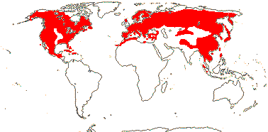
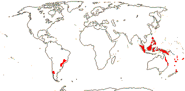
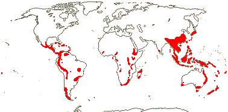
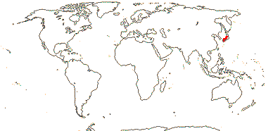
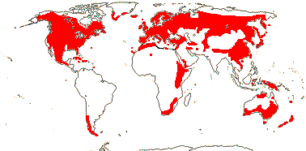
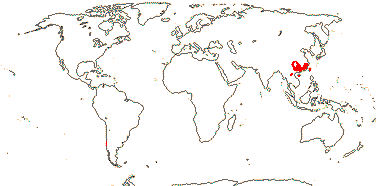
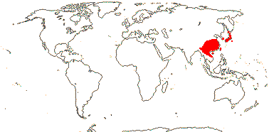
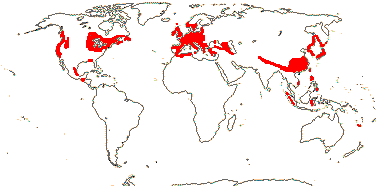

EMBRYOPSIDA Pirani & Prado
Gametophyte dominant, independent, multicellular, not motile, initially ±globular; showing gravitropism; acquisition of phenylalanine lysase [PAL], microbial terpene synthase-like genes +, triterpenoids produced by CYP716 enzymes, phenylpropanoid metabolism [lignans +, flavonoids + (absorbtion of UV radiation)], xyloglucans in primary cell wall, side chains charged; plant poikilohydrous [protoplasm dessication tolerant], ectohydrous [free water outside plant physiologically important]; thalloid, leafy, with single-celled apical meristem, tissues little differentiated, rhizoids +, unicellular; chloroplasts several per cell, pyrenoids 0; glycolate metabolism in leaf peroxisomes [glyoxysomes]; centrioles/centrosomes in vegetative cells 0, microtubules with γ-tubulin along their lengths [?here], interphase microtubules form hoop-like system; metaphase spindle anastral, predictive preprophase band + [with microtubules and F-actin; where new cell wall will form], phragmoplast + [cell wall deposition centrifugal, from around the anaphase spindle], plasmodesmata +; antheridia and archegonia jacketed, surficial; blepharoplast +, centrioles develop de novo, bicentriole pair coaxial, separate at midpoint, centrioles rotate, associated with basal bodies of cilia, multilayered structure + [4 layers: L1, L4, tubules; L2, L3, short vertical lamellae] (0), spline + [tubules from L1 encircling spermatid], basal body 200-250 nm long, associated with amorphous electron-dense material, microtubules in basal end lacking symmetry, stellate array of filaments in transition zone extended, axonemal cap 0 [microtubules disorganized at apex of cilium]; male gametes [spermatozoids] with a left-handed coil, cilia 2, lateral; oogamy; sporophyte multicellular, cuticle +, plane of first cell division transverse [with respect to long axis of archegonium/embryo sac], sporangium and upper part of seta developing from epibasal cell [towards the archegonial neck, exoscopic], with at least transient apical cell [?level], initially surrounded by and dependent on gametophyte, placental transfer cells +, in both sporophyte and gametophyte, wall ingrowths develop early; suspensor/foot +, cells at foot tip somewhat haustorial; sporangium +, single, terminal, dehiscence longitudinal; meiosis sporic, monoplastidic, MTOC [MTOC = microtubule organizing centre] associated with plastid, sporocytes 4-lobed, cytokinesis simultaneous, preceding nuclear division, quadripolar microtubule system +; wall development both centripetal and centrifugal, 1000 spores/sporangium, sporopollenin in the spore wall laid down in association with trilamellar layers [white-line centred lamellae; tripartite lamellae]; nuclear genome size [1C] <1.4 pg, main telomere sequence motif TTTAGGG, LEAFY and KNOX1 and KNOX2 genes present, ethylene involved in cell elongation; chloroplast genome with close association between trnLUAA and trnFGAA genes [precursors for starch synthesis], tufA gene moved to nucleus; mitochondrial trnS(gcu) and trnN(guu) genes +.
Many of the bolded characters in the characterization above are apomorphies of subsets of streptophytes along the lineage leading to the embryophytes, not apomorphies of crown-group embryophytes per se.
All groups below are crown groups, nearly all are extant. Characters mentioned are those of the immediate common ancestor of the group, [] contains explanatory material, () features common in clade, exact status unclear.
STOMATOPHYTES
Abscisic acid, L- and D-methionine distinguished metabolically; pro- and metaphase spindles acentric; sporophyte with polar transport of auxins, class 1 KNOX genes expressed in sporangium alone; sporangium wall 4≤ cells across [≡ eusporangium], tapetum +, secreting sporopollenin, which obscures outer white-line centred lamellae, columella +, developing from endothecial cells; stomata +, on sporangium, anomocytic, cell lineage that produces them with symmetric divisions [perigenous]; underlying similarities in the development of conducting tissue and of rhizoids/root hairs; spores trilete; shoot meristem patterning gene families expressed; MIKC, MI*K*C* genes, post-transcriptional editing of chloroplast genes; gain of three group II mitochondrial introns, mitochondrial trnS(gcu) and trnN(guu) genes 0.
[Anthocerophyta + Polysporangiophyta]: gametophyte leafless; archegonia embedded/sunken [only neck protruding]; sporophyte long-lived, chlorophyllous; cell walls with xylans.
POLYSPORANGIOPHYTA†
Sporophyte well developed, branched, branching apical, dichotomous, potentially indeterminate; hydroids +; stomata on stem; sporangia several, terminal; spore walls not multilamellate [?here].
TRACHEOPHYTA†
Vascular tissue + [tracheids, walls with bars of secondary thickening].
EXTANT TRACHEOPHYTA / VASCULAR PLANTS
Sporophyte with photosynthetic red light response, stomata open in response to blue light; plant homoiohydrous [water content of protoplasm relatively stable]; control of leaf hydration passive; plant endohydrous [physiologically important free water inside plant]; (condensed or nonhydrolyzable tannins/proanthocyanidins +); xyloglucans with side chains uncharged [?level], in secondary walls of vascular and mechanical tissue; lignins +; stem apex multicellular, with cytohistochemical zonation, plasmodesmata formation based on cell lineage; tracheids +, in both protoxylem and metaxylem, G- and S-types; sieve cells + [nucleus degenerating]; endodermis +; leaves/sporophylls spirally arranged, blades with mean venation density ca 1.8 mm/mm2 [to 5 mm/mm2], all epidermal cells with chloroplasts; sporangia adaxial, columella 0; tapetum glandular; ?position of transfer cells; MTOCs not associated with plastids, basal body 350-550 nm long, stellate array in transition region initially joining microtubule triplets; suspensor +, shoot apex developing away from micropyle/archegonial neck [from hypobasal cell, endoscopic], root lateral with respect to the longitudinal axis of the embryo [plant homorhizic].
[MONILOPHYTA + LIGNOPHYTA]Sporophyte endomycorrhizal [with Glomeromycota]; growth ± monopodial, branching spiral; roots +, endogenous, positively geotropic, root hairs and root cap +, protoxylem exarch, lateral roots +, endogenous; G-type tracheids +, with scalariform-bordered pits; leaves with apical/marginal growth, venation development basipetal, growth determinate; sporangium dehiscence by a single longitudinal slit; cells polyplastidic, MTOCs diffuse, perinuclear, migratory; blepharoplasts +, paired, with electron-dense material, centrioles on periphery, male gametes multiciliate; chloroplast long single copy ca 30kb inversion [from psbM to ycf2]; mitochondrion with loss of 4 genes, absence of numerous group II introns; LITTLE ZIPPER proteins.
LIGNOPHYTA†
Sporophyte woody; stem branching lateral, meristems axillary; lateral root origin from the pericycle; cork cambium + [producing cork abaxially], vascular cambium bifacial [producing phloem abaxially and xylem adaxially].
SEED PLANTS†
Plants heterosporous; megasporangium surrounded by cupule [i.e. = unitegmic ovule, cupule = integument]; pollen lands on ovule; megaspore germination endosporic [female gametophyte initially retained on the plant].
EXTANT SEED PLANTS / SPERMATOPHYTA
Plant evergreen; nicotinic acid metabolised to trigonelline, (cyanogenesis via tyrosine pathway); microbial terpene synthase-like genes 0; primary cell walls rich in xyloglucans and/or glucomannans, 25-30% pectin [Type I walls]; lignin chains started by monolignol dimerization [resinols common], particularly with guaiacyl and p-hydroxyphenyl [G + H] units [sinapyl units uncommon, no Maüle reaction]; root stele diarch to pentarch, xylem and phloem originating on alternating radii, cork cambium deep seated; stem apical meristem complex [with quiescent centre, etc.], plasmodesma density in SAM 1.6-6.2[mean]/μm2 [interface-specific plasmodesmatal network]; eustele +, protoxylem endarch, endodermis 0; wood homoxylous, tracheids and rays alone, tracheid/tracheid pits circular, bordered; mature sieve tube/cell lacking functioning nucleus, sieve tube plastids with starch grains; phloem fibres +; cork cambium superficial; leaf nodes 1:1, a single trace leaving the vascular sympodium; leaf vascular bundles amphicribral; guard cells the only epidermal cells with chloroplasts, stomatal pore with active opening in response to leaf hydration, control by abscisic acid, metabolic regulation of water use efficiency, etc.; axillary buds +, exogenous; prophylls two, lateral; leaves with petiole and lamina, development basipetal, lamina simple; sporangia borne on sporophylls; spores not dormant; microsporophylls aggregated in indeterminate cones/strobili; grains monosulcate, aperture in ana- position [distal], primexine + [involved in exine pattern formation with deposition of sporopollenin from tapetum there], exine and intine homogeneous, exine alveolar/honeycomb; ovules with parietal tissue [= crassinucellate], megaspore tetrad linear, functional megaspore single, chalazal, sporopollenin 0; gametophyte ± wholly dependent on sporophyte, development initially endosporic [apical cell 0, rhizoids 0, etc.]; male gametophyte with tube developing from distal end of grain, male gametes two, developing after pollination, with cell walls; female gametophyte initially syncytial, walls then surrounding individual nuclei; embryo cellular ab initio, suspensor short-minute, embryonic axis straight [shoot and root at opposite ends; plant allorhizic], cotyledons 2; embryo ± dormant; chloroplast ycf2 gene in inverted repeat, trans splicing of five mitochondrial group II introns, rpl6 gene absent; whole nuclear genome duplication [ζ - zeta - duplication], two copies of LEAFY gene, PHY gene duplications [three - [BP [A/N + C/O]] - copies], 5.8S and 5S rDNA in separate clusters.
EXTANT GYMNOSPERMS / PINOPHYTA / ACROGYMNOSPERMAE
Biflavonoids +; cuticle wax tubules with nonacosan-10-ol; ferulic acid ester-linked to primary unlignified cell walls, silica usu. low; root protophloem not producing sieve tubes, with secretory cells, sieve area of sieve tube with small pores generally less than 0.8 µm across that have cytoplasm and E.R., joining to form a median cavity in the region of the middle lamella, Strasburger/albuminous cells associated with sieve tubes [the two not derived from the same immediate mother cell], phloem fibres +; sclereids +, ± tracheidal transfusion tissue +; stomatal poles raised above pore, no outer stomatal ledges or vestibule, epidermis lignified; buds perulate/with cataphylls; lamina development marginal; plants dioecious; microsporangia abaxial, dehiscing by the action of the epidermis [= exothecium]; pollen tectate, endexine lamellate at maturity, esp. intine with callose; ovules aggregated into strobili, erect, pollen chamber formed by breakdown of nucellar cells, nucellus massive; ovules increasing considerably in size between pollination and fertilization, but aborting unless pollination occurs; ovule with pollination droplet; pollen grain germinates on ovule, usu. takes two or more days, tube with wall of pectose + cellulose microfibrils, branched, growing at up to 10(-20) µm/hour, haustorial, breaks down sporophytic cells; male gametophyte of two prothallial cells, a tube cell, and an antheridial cell, the latter producing a sterile cell and 2 gametes; male gametes released by breakdown of pollen grain wall, with >1000 cilia, basal body 800-900 nm long; fertilization 7 days to 12 months or more after pollination, to ca 2 mm from receptive surface to egg; female gametophyte initially with central vacuole and peripheral nuclei plus cytoplasm, cellularization/alveolarization by centripetal formation of anticlinal walls, the inner periclinal face open, with nuclei connected to adjacent nuclei by spindle fibres; seeds "large" [ca 8 mm3], but not much bigger than ovule, with morphological dormancy; testa mainly of coloured sarcoexotesta, scleromesotesta, and ± degenerating endotesta; first zygotic nuclear division with chromosomes of male and female gametes lining up on separate but parallel spindles, embryogenesis initially nuclear, embryo ± chlorophyllous; gametophyte persists in seed; plastid and mitochondrial transmission paternal; genome size [1C] 10< pg [1 pg = 109 base pairs]; two copies of LEAFY gene [LEAFY, NEEDLY] and three of the PHY gene, [PHYP [PHYN + PHYO]], chloroplast inverted repeat with duplicated ribosomal RNA operons, second intron in the mitochondrial rps3 gene [group II, rps3i2].
PINALES Gorozh. / conifers Main Tree.
Tree branched; compression wood + [reaction wood: much-thickened/lignified fibres on abaxial side of branch-stem junction]; wood pycnoxylic; torus:margo pits + [tracheid side walls], pits bordered; phloem with scattered fibres alone [Cycadales?], resin ducts/cells in phloem [and elsewhere]; lignins with guaiacyl units (G-lignin) [lacking syringaldehyde, Mäule reaction negative]; cork cambium ± deep seated; bordered pits on tracheids round, opposite; (cladoptosis +); nodes 1:1; axillary buds + (0); leaves with single vein, fasciculate, needle-like or flattened; plants monoecious; microsporangiophore/filament simple, hyposporangiate; dehiscing by the action of the hypodermis [endothecium]; pollen saccate, exine thick [³2 µm thick], granular; ovulate strobilus compound, erect, ovuliferous scales flattened, ± united with bract scales; ovules lacking pollen chamber, inverted [micropyle facing axis]; pollen buoyant, not wettable, pollen tube unbranched, growing towards the ovule, wall with arabinogalactan proteins; gametes non-motile, lacking walls, siphonogamy [released from the distal end of the tube]; female gametophyte lacking chlorophyll, not photsynthesising, seed coat dry, not vascularized; embryo initially with 2 to 4 free-nuclear divisions, with upper tier or tiers of cells from which pro- or secondary suspensor develops, elongated primary suspensor cells and basal embryonal cells [or some variant]; germination phanerocotylar, epigeal, (seedlings green in the dark); plastid and mitochondrial transmission paternal, one duplication in the PHYP gene line, one copy of chloroplast inverted repeat missing. - 7 families, 68 genera, 545 species.
Age. Clarke et al. (2011: other ages) suggested a crown age for Pinales of (286-)252(-212) m.y., Magallón et al. (2013) an age of ca 278 m.y., and Won and Renner (2006) an age of (324-)298(-270) m.y. - all include Gnetales - while the estimate by Crisp and Cook (2011: no Gnetales) of around 270 m.y. and of around 260.9 m.y. by Tank et al. (2015: Table S2) are also broadly comparable. Leslie et al. (2012) suggested an age of around 350-275 m.y.a., but Zhou et al. (2014) and Magallón et al. (2015) suggested appreciably younger ages of (187.3-)161.4(-147) and ca 127 m.y.a. respectively; see also P. Soltis et al. (2002).
Note: Boldface denotes possible apomorphies, (....) denotes a feature common in the clade, exact status uncertain, [....] includes explanatory material. Note that the particular node to which many characters, particularly the more cryptic ones, should be assigned is unclear. This is partly because homoplasy is very common, in addition, basic information for all too many characters is very incomplete, frequently coming from taxa well embedded in the clade of interest and so making the position of any putative apomorphy uncertain. Then there are the not-so-trivial issues of how character states are delimited and ancestral states are reconstructed (see above). In particular, if Gnetales are to be included here, depending on where they end up, apomorphies could change considerably.
Evolution. Divergence & Distribution. There are no known synapomorphies for a clade containing living and fossil conifers (e.g. Rothwell & Serbet 1994). The morphology of extinct conifers and coniferophytes is being re-evaluated as the morphologies of entire organisms are pieced together from what used to be separate form genera; the result is that many of the conventional taxonomic groupings are being radically overhauled (e.g. Rothwell et al. 2005; Hernandez-Castillo et al. 2009; see also below). As this is done, the extent of the diversity of these fossil plants is becoming clear. Not only are forked leaves common, but stomatal distribution, etc., may differ dramatically on leaves from the one plant, compound microsporangiate strobili are known (c.f. Gnetales!), as are megasporagiate strobili which do not terminate vegetative growth of the axis on which they occur (e.g. Hernandez-Castillo et al. 2001; Rothwell & Mapes 2001).
The rate of molecular evolution of conifers is substantially slower than that in woody angiosperms, let alone that of herbaceous angiosperms, although the rate of non-synonymous substitutions is higher, perhaps connected with their large population side, outcrossing and overall low population structure (Buschiazzo et al. 2012; see also Jaramillo-Correa et al. 2016).
Leslie et al. (2012) offer ages for several conifer clades (see below) and evaluate the fossil data critically; their four-gene tree is based on an almost complete sampling of the group. The current distributions of many extant conifer groups is much smaller than and/or very different from their past distributions (for distribution maps of all conifers, see Farjon & Filer 2013). Many conifers have fossil records going back to the Cretaceous; see Manchester (1999) for north temperate distributions), McIver (2001) for fossils of the African Widdringtonia (Cupressaceae) in rocks of Cretaceous age in Alabama. For the early Caenozoic fossil history of what are now East Asian endemics, see Ferguson et al. (1997) and Manchester et al. (2009) - genera in Taxaceae, Pinaceae, Sciadopityaceae and Cupressaceae are included. However, Biffin et al. (2010b) note that some calibration scenarios have crown-group divergence of Araucariaceae and Podocarpaceae largely a (mid-Cretaceous to) Caenozoic phenomenon, which would question the attribution of early fossils at least to those families. Indeed, podocarps with broader leaves seem to have diversified considerably in the earlier Caenozoic in the southern hemisphere (Brodribb & Hill 2004; Biffin & Lowe 2011 - see below).
Diversification in most conifer genera is Caenozoic in age, but Leslie et al. (2012) note that most southern hemisphere clades are older than northern clades, and this is particularly true of the southern Cupressaceae-Callitroideae - its mean node age is four times that of the northern Cupressaceae-Cupressoideae. Leslie et al. (2012) aasociated this with the more equable climate in at least parts of the southern hemisphere compared with the major climate swings in the northern hemisphere beginning in the Oligocene. Earlier, during the Palaeocene-Eocene thermal maximum, conifers, perhaps especially Cupressaceae and Podocarpaceae, were replaced by angiosperm-dominated vegetation (Wing & Currano 2013), although now, of course, Pinaceae dominate boreal forests in particular, and southern conifers, too, can be locally very abundant.
Doyle (2009) discussed the evolution of exine morphology; granular exine may be an aopmophy for the order and then lost twice, or alveolar/honeycomb exine may be plesiomorphous, with granular exine gained three times, or the may be some other combination of gains and losses, but always adding up to three steps. Hence, the optimization here is an arbitrary choice! Franceschi et al. (2008) note possible anatomical apomorphies that are associated with defence against herbivorous insects.
Ecology & Physiology. Bond (1989), Keeley and Zedler (1998), Brodribb et al. (2012), Augusto et al. (2014) and others have emphasized that after the seedling stage conifers in general can out-compete angiosperms in a number of environments that are low in nutrients, being able to tolerate poor soil and extreme conditions such as drought and cold. There are at least four major clades involved: Pinaceae, mostly northern, [Araucariaceae + Podocarpaceae], now mostly southern, and two major clades in Cupressaceae that have largely inhabited the northern and southern hemispheres respectively since the Jurassic (Brodribb et al. 2012). Many conifers, but less the [Podocarpaceae + Araucariaceae] clade, tolerate extreme cold, they grow well in high-light environments, and despite lacking vessels their wood shows moderate hydraulic conductance and is resistant to cavitation, etc. (Brodribb et al. 2012; Augusto et al. 2014).
Sperry (2003), Pitterman et al. (2005), Hacke et al. (2005, 2015) and Sperry et al. (2006) compare water transport in tracheids that have the torus:margo pits found in many conifers (including Ginkgo), with that in other kinds of tracheids and in vessels. Pore size in the margo is relatively large facilitating water transport, while the torus provides a valuable safety feature guarding against embolism as it will plug the pit if pushed against one side by pressure from the embolism. Indeed, hydraulic conductance in tracheids with torus:margo pits is somewhat greater than in vessels of similar diameter when expressed on a sapwood area basis, while studies of cavitation in this system suggest that it is not connected with the size of the pores in the margo, but rather with the torus:pit aperture ratio, since if the torus is relatively too narrow, air will seep in around the sides (Pittermann et al. 2010). Vascular tissue with tracheids only may be less hydraulically efficient than vascular tissue with vessels that have simple perforations, but they are tolerant of hydraulic stress and are resistant to cavitation, despite gymnosperms investing only about half as much as angiosperms in wall material - but at the same time they can make up the trunk of very large trees (Sperry 2003; Hacke et al. 2015); lipid surfactants in the xylem of angiosperms, at least, i.a. coat forming nanobubbles andprevent the formation of embolisms and they should be looked for here, too (Schenk et al. 2017). As Pitterman et al. (2005: p. 1924) note, "the evolution of the torus-margo membrane within the gymnosperm lineage from homogeneous pits was equivalent to the evolution of vessels within the angiosperms" (see also Wilson 2015; Hacke et al. 2015).
Another element in the control of water flow in conifers is transfusion tissue, groups of tracheid cells just outside the vascular bundles. These cells collapse as the leaf loses water and water deficits are not too great (<-3 MPa), but readily regain their size when the leaf becomes rehydrated. When collapsed, they reduce the flow of water from the xylem (Y.-J. Zhang et al. 2014).
The diameter of first order roots is linked to mycorrhizal type and how the plant forages for nutrients, and it varies considerably (W. Chen et al. 2013, 2016), but no comprehensive survey seems to have been carried out.
Litter and wood decay of gymnosperms in general is slower than that of angiosperms (e.g. Wardle et al. 2008; Cornwell et al. 2008b; Weedon et al. 2009), and root decay of conifers in particular is slower (Silver & Miya 2001). Brown rot fungi like boletes are common on conifers, and they can access much of the cellulose in the cell wall but they cannot destroy lignin; they have often evolved from white-rot fungi (e.g. Floudas et al. 2012; Kohler et al. 2015), although the basal dacrymycete Calcera cornea may have evolved from a soft-rot ancestor (Nagy et al. 2015).
Many Pinaceae, ECM plants, grow successfully in low N conditions, while podocarps, AM plants, grow in low P conditions (Brodribb et al. 2012).
Conifers frequently dominate the communities in which they grow, and are often long-lived plants; the high-light conditions they prefer are often associated with infrequent catastrophic disturbances that allow seedling establishment. Some emergent and apparently dominant conifers (often other than Pinaceae) may have have remarkably little effect on the forests in which they grow, the basal area of angiosperm trees in forests with and without these emergents, but which are otherwise comparable, being similar (Enright & Ogden 1995; Aiba et al. 2007).
Seventeen species of conifers in Pinaceae, Araucariaceae, and Cupressaceae, along with 29 species of Dipterocarpaceae, and especially Eucalyptus, are "giant trees" at least 70 m tall (Tng et al. 2012).
Pollination Biology & Seed Dispersal. For male cone variation and evolution, see Schulz et al. (2014). Much has been learned about pollination and pollen germination in conifers in the last few years, and this is summarized by Leslie et al. (2015a), although important work had been carried out about 80 years ago. Details of the fascinating story in Leslie et al. (2015a) depend on the topology of the tree used, which in Podocarpaceae, for instance, differs from that below (in such cases, data checked against Leslie et al. 2015b). Wind pollination is ubiquitous. The pollen grains directly impact the ovulate cones rather than being swept around them by a turbine-like action (Cresswell et al. 2007). There are correlations between the presence of pollen sacci or wings, exine thickness and structure, whether (no wings) or not (wings) the pollen is wettable/pollen buoyancy, ovule and cone orientation, and presence of a pollination drop (Tomlinson 1994; Little et al. 2014; Leslie et al. 2015a; for the composition of the pollination droplet, see Ziegler 1959; Nepi et al. 2009). It had been thought that the sacci on conifer pollen facilitated its dispersal by wind, however, they function more like water wings. The sacci help orient the pollen grains in the pollination droplet (Doyle & O'Leary 1935; Salter et al. 2002 and references), or, more particularly, when the ovules are inverted, a common condition, the pollen grains are wetted and float up to the micropyle where the saccus orients the grain on the nucellus, separating and exposing the sulcus through which the pollen tube germinates (Salter et al. 2002; Leslie 2010b). Sacci also help in the selection of appropriate pollen grains during pollination. Thus the proportion of saccate to non-saccate pollen grains inside the ovules is higher than that outside (Leslie 2009). Changes in pollination mechanisms seem not to be accompanied by changes in diversification rates, and although sacci have been lost several times, in no case have sacci re-evolved within esaccate clades, loss being something of a one-way street (Leslie et al. 2015a). The pollination droplet in Phyllocladus and many taxa with erect ovules is resorbed through the micropyle, and again the pollen grains are brought close to the nucellus; in Juniperus communis and other taxa this resorbtion may be an active process happening quite soon after the pollen grain lands (Mugnaini et al. 2007). There are further variants of these pollination mechanisms in Coniferales (Owens et al. 1998; Salter et al. 2002; Fernando et al. 2005 for references) and in other ancient gymnosperms (Leslie 2008).
Recent work suggests that the pollen story may be more complex. Sacci may indeed increase the distance the pollen grain can travel before it falls to the ground, so facilitating wind dispersal (Schwendemann et al. 2007). However, this depends on the nature of the sacci; if they have extensive air sacs, as in Pinus, pollen is likely to travel further, but if the sacci are composed of denser material, as in Falcatifolium, the pollen will fall faster - as it may also if the surface of the pollen grain is not smooth (Grega et al. 2013). Furthermore, the pollination droplet may also be involved in insect pollination, as in a number of Gnetales. For additional information on pollination, see Doyle (1945), Tomlinson (1994, 2000, 2012), Tomlinson et al. (1997), and Tomlinson and Takaso (2002); see also Williams (2009).
There is considerable variation in the development of the male gametophyte (Fernando et al. 2010: summary and terms used). The actual process of pollen germination varies, and the feature "pollen exine shed during microgametophyte germination", is likely to have evolved more than once (?three times) in Pinaceae alone (see also Rydin & Friis 2005); for cell death induced by the growing pollen tube, see Fernando et al. (2005 and references). Proteins have been found in the pollination droplet, and these may be involved in defence against pathogens and in promoting male gametophyte development (Wagner et al. 2007).
For details of seed morphology, dispersal types, etc., and their evolution, see Contreras et al. (2016). Fleshy (the fleshiness is of several kinds) animal-dispersed seeds have evolved several times from winged seeds, but there have been no reversals, while the dry animal-dispersed seed type in Pinus has, hoever, reversed to the winged type (Contreras et al. 2016). Bateman et al. (2011; see also Givnish 1980) note a correlation between dioecy and fleshy, animal-dispersed seeds and monoecy and dry, wind-dispersed seeds in gymnosperms, a correlation that is evident within Pinales. Leslie et al. (2013) suggest that this is largely due to the persistence of groups which are dioecious and have fleshy fruits and monoecious and have dry fruits; they note common transitions from the monoecy/fleshy to dioecy/fleshy combinations, although overall such features had little effect on diversification. Pollen and dry seed cone size in particular correlates with branch thickness, etc., in conifers; fleshy seed cones are notably smaller than dry cones (Leslie et al. 2014). Variation in seed size links with dispersal mechanisms - abiotic dispersal < seed subtended by attractant tissues < attractant issues part of the seed - and there are also correlations with clades (Leslie & Beaulieu 2015).
Plant-Animal Interactions. Herbivory in gymnosperms as a whole is relatively low (Turcotte et al. 2014: see caveats). Conifers have layers of polyphenol-containing parenchyma cells in the phloem, possibly offering some protection against insects (Li et al. 2012), while Pinaceae have resin ducts in both phloem and xylem and other Pinales have resin ducts only in the xylem. These other Pinales also have large numbers of small, extracellular, calcium oxalate crystals and stratified phloem, while Pinaceae have scattered sclereid cells or sometimes groups of such cells (e.g. Hudgins et al. 2003; Franceschi et al. 2008: q.v. fot possible conifer apomorphies associated with these interactions). The different elements of the defences are constitutive and/or inducible, methyl jasmonate being part of the inductive pathway (e.g. Hudgins et al. 2003; Hudgins & Franceschi 2004), and different herbivores elicit different responses by the plant (Moreira et al. 2013), and even within Pinus there is variation in how much particular defences are expressed constitutively (Carrillo-Gavilán et al. 2014). See below for some details about the interactions between bark beetles, their associated fungi, and the conifer host.
Favret and Voegtlin (2004), Meseguer et al. (2015) and R. Chen et al. 2016) discuss speciation of Cinara aphids, found on Cupressaceae and especially Pinaceae, see also below. Many of the wood-eating basal termites (their protozoans in theit guts can break down lignin) seem to like the wood of Pinales; the crown-group age of termites is Jurassic, ca (170-)149(-136) m.y.a. (Bourguignon et al. 2014).
Bacterial/Fungal Associations. A number of rusts, including those on ferns, Rosaceae, Grossulariaceae, etc., have part of their life cycles on Pinales, especially Pinaceae (Savile 1979b). For foliar endophytes and their bacterial associates, see Hoffman and Arnold (2010). Basidiomycete brown rot fungi are common in coniferous forests and are also found in broad-leaved, more temperate forests, but they are at most uncommon in tropical forests (Gilbertson 1981); for the relationships of (and uncertain distinction between) brown and white rot fungi, see Riley et al. (2014), Nagy et al. (2015). For the blue-staining ascomycete fungi associated with ambrosia beetles, see below.
Genes & Genomes. Chromosome number shows little variation in Pinales, and overall there is little polyploidy (Murray 2013; Scott et al. 2016). Conifers are noted for their very large nuclear genomes with 2C values of up to 72 pg (Zonneveld 2012); for 1C values, see the Plant DNA C-values Database (consulted vi.2013). These massive genomes are the result of the activity of a number of transposable elements that is not counteracted by mechanisms for slimming genomes, as in angiosperms (Ahuja & Neale 1005; Nystedt et al. 2013). Note, however, that genome size in Pinales is quite similar to that in other gymnosperms. Reductions in genome size have probably occurred in Podocarpaceae and in particular in Gnetum, so the increase in size in gymnosperms is not totally a one-way ticket (c.f. Bennetzen & Kellogg 1997). Leaf mass per unit area seems to be correlated with genome size, but this may be because of phylogenetic correlations (Beaulieu et al. 2007b).
However, Z. Li et al. (2015) suggested that there have been three duplications in the Pinales area, one in stem Pinaceae, another in stem [Taxaceae + Cupressaceae] (Sciadopitys was not examined), and a third in Welwitschia. However, Scott et al. (2016) emphasized the rarity of polyploidy in extant conifers, perhaps connected with their slow rate of diploidization; this suggestion was based on their study of the coast redwood, Sequoia sempervirens, the only hexaploid in the whole group.
C.-S Wu et al. (2011b) suggested that a different copy of the inverted repeat had been lost in Pinaceae (the IRb copy) and in the clade making up the rest of the order (the IRa copy). See also Raubesen and Jansen (1992a), Lackey and Raubeson (2008) and Hirao et al. (2008) for the loss of a copy of the inverted repeat.
There is extensive duplication of the knox-1 gene within Pinaceae, at least, although more general sampling is needed to pin down the point at which this duplication occurred (Guillet-Claude et al. 2004).
Chemistry, Morphology, etc. For fatty acids in the seeds, see Wolff et al. (2002 and references), and for resin composition and gum production, see Tappert et al. (2011). Conifer lignin, primarily made up of guaiacyl units, is denser, more highly condensed, has a larger polymer size, etc., than the S-rich lignins of angiosperms (Wagner et al. 20915).
The interpretation of the stem apex in terms of the tunica-corpus layering is not easy (see Napp-Zinn 1966). I have not integrated much of the considerable variation in wood anatomy with the clades recognised here (see e.g. Zhou & Jiang 1992 for information). Cork cambium is often more or less deep seated, although in Sequoia and Phyllocladus (e.g.) is is superficial (Möller 1882). Bark anatomy is very complex, but fortunately it has been studied in detail (e.g. Franceschi et al. 2008). Calcium oxalate microcrystals are commonly found in some cell walls throughout the group (Fink 1991; Hudgins et al. 2003: ?Cephalotaxaceae, Sciadopityaceae), but their distribution in other gymnosperms is unclear; they may be absent. Their position within tissues is linked with the development of fibres, the amount of resin secreted, etc. (Hudgins et al. 2003). There is generally a single trace per leaf, but if the leaves are opposite, there may be two traces, but then they fuse before they enter the petiole (Namboodiri & Beck 1968a, b), and leaf traces can also make connections with xylem produced during the second and subsequent years (Maton & Gartner 2005). Secondary growth (only phloem is produced) has been reported from the leaves of a number of conifers, including Pinus longaeva, the needles of which can live for 30 years or more (Ewers 1982; Hacke et al. 2015). Short shoots occur in a number of taxa (see Dörken et al. 2012 for a summary), and branch shedding, cladoptosis, which also occurs in taxa other than those with short shoots, is widespread (Burrows et al. 2007 and references). Organised bud meristems usually occur in the axils of only some leaves, although more cryptic meristems are quite widespread (Namboodiri & Beck 1968a; Fink 1984; Burrows 1999, 2009); in taxa like Pinus and Sciadopitys axillary buds are much more common, although most produce short shoots.
Bisexual strobili that have ovuliferous scales above the microsporangia, i.e., the same basic arrangement as in angiosperm flowers, are scattered through the clade (Flores-Rentería et al. 2011). Basic cone morphology is very variable. Conifer seed cones have becoming more massive and strongly constructed since the Triassic, and particularly the Jurassic, presumably in reponse to animal predation pressure (Leslie 2011b). Among extant taxa, Taxus has tiny female cones each with a single, erect ovule, but cones are often massive structures. The ovuliferous scale is often well-developed and the bract scale inconspicuous, or the bract and ovuliferous scales may be largely separate, as in Pseudotsuga, while in Cupressaceae there is little evidence of an ovuliferous scale in the mature cone, which consists largely of bract scales (Schulz & Stutzel 2007; Rothwell et al. 2011 for references). Understanding details of the morphological evolution of cones will depend on advances in our understanding of the fossil record, and it is likely that heterochrony has been involved; Cupressaceae can be linked with the fossil Voltziaceae (e.g. Rothwell et al. 2011). Developmental studies may also be of value. Thus Englund et al. (2011) found that gene expression patterns linked the epimatium of
A branched pollen tube occurs sporadically in Pinales (Friedman 1987 for references). Male gametes need more study. Some taxa have binucleate sperm cells, i.e., a cell plate does not form in the spermatogeneous cell, or, if it does, it is incomplete. The male gametes here may be unequal in size, as in Dacrydium, and one may even be extruded from the cytoplasm, as in Podocarpus spp. and Taxus. In at least some Gnetum, Podocarpus andinus, and Torreya taxifolia two unequally-sized male cells are produced (Singh 1978 for literature; I am grateful to Ned Friedman for help in understanding this complicated pattern of variation). Double fertlization sometimes occurs in Pinales (Friedman 1992). The free-nuclear stage in the proembryo of Pinales is shorter than that of other gymnosperms, being only 5 or 6 rounds of nuclear division in Podocarpaceae and Araucariaceae and even fewer in other members of the order (Owens et al. 2003c). Embryo size is rather variable, although it is often rather larger than that of the common ancestor of extant seed plants; in Pinus it may be close to the length of the seed.
For a classic study of both fossil and extant conifers, see Florin (e.g. 1951); see also Page (1990) and especially Gifford and Foster (1988), Farjon (2005b) for a bibliography and Farjon (2008) for an excellent general account; Debreczy and Rácz (2006) and Eckenwalder (2009) offer other general accounts. See also Trapp and Croteau (2001a: resin biosynthesis), Geyler (1867), Barthelmess 1935, and Kumari (1963: nodal anatomy), Möller (1882: cork cambium), Napp-Zinn (1966: leaf anatomy), Den Outer (1967) and Schulz (1990), both phloem anatomy, much detail unincorporated, Zhou and Jiang (1992: wood anatomy); see also Sivak (1975: detailed study of saccate pollen), Owens et al. (1995b: cytoplasmic inheritance, nuclei sometimes incorporate cytoplasm), Williams (2009: reproductive biology), Mundry (2000: cone/strobilus development, emphasis on Taxaceae and friends), Sklonnaya and Ruguzova (2003: spermatogenesis), Bobrov and Melikian (2006: seed anatomy, both testa and tegmen present?), Buchholz (1929: embryogeny), Butts and Buchholz (1940: cotyledon number), Hill and de Fraine (1908, 1909: seedlings), Mathews and Tremonte (2012: greening of seedlings in the dark), and Herrmann (1951: intergeneric grafting). A valuable resource is the Gymnosperm Database (Earle 1997 onwards).
Phylogeny. Given the uncertainty in our knowledge of the relationships between the major seed-plant clades, direct links to Cycadales, Gnetales, Ginkgoales, and flowering plants are provided; for general discussion on relationships, see above and for more discussion about the immediate relatives of Gnetales, see the Gnetales page.
Within conifers, relationships are being substantially clarified. Pinaceae (Pinus, Cedrus, etc.) are sister to the rest, as a morphological cladistic analysis by Hart (1987) suggested some time ago (but c.f. Nixon et al. 1994; Doyle 1996b). Molecular data and additional morphological work largely confirm the relationships in the tree here, which is based on the work of Quinn et al. (2002: successive approximations weighting), see also Price et al. (1993), Tsumura et al. (1995: RFLP analysis, tree [unrooted] with the same topology as that used here), Kelch and Cranfill (2000), Gugerli et al. (2001: e.g. the mitochondrial nadI gene), Rai et al. (2002, especially 2008a), and, more recently, the four-gene analysis of Leslie et al. (2012) with its excellent sampling (but not Gnetum, etc.) and Ruhfel et al. (2014). However, the topologies in the scenarios of Biffin et al. (2010b) are either [Pinaceae [Podocarpaceae + Araucariaceae]] or [Pinaceae + Sciadopityaceae, etc.]... Gnetales are here included in Pinales (see discussion on Cycadales page), although I haven't moved them yet, being uncertain where they will actually go.
For relationships in the Cephalotaxaceae-Taxaceae area, which for some time were rather uncertain, see below.
Classification. Producing evolutionary classifications, or classifications that emphasise one or two favored morphological characters, seems to remain popular with those working on conifers (e.g. Keng 1975; Melikian & Bobrov 2000; Fu et al. 2004 [Nageiaceae and Podocarpaceae well separated], Bobrov & Melikian 2006 [Araucariaceae and other conifers form a lineage quite distinct from Pinaceae and Sciadopityaceae]).
See Farjon (1990, 2005a, c) for detailed treatments of the conifers, Farjon (2001) for a checklist, and Christenhusz et al. (2011b) for a linear classification.

Includes Araucariaceae, Cupressaceae, Pinaceae, Podocarpaceae, Sciadopityaceae, Taxaceae.
Synonymy: Abietales Link, Actinostrobales Doweld, Araucariales Gorozh., Athrotaxidales Doweld, Cephalotaxales Reveal, Cunninghamiales Doweld, Cupressales Bromhead, Falcatifoliales Melikian & Bobrov, Metaxyales Doweld, Microstrobales Doweld & Reveal, Parasitaxales Melikian & Bobrov, Podocarpales Reveal, Saxegothaeales Doweld & Reveal, Sciadopityales Reveal, Taxales Knobloch, Taxodiales Heintze - Araucariidae Doweld, Cupressidae Doweld, Pinidae Cronquist, Takhtajan, & Zimmermann, Podocarpidae Doweld & Reveal, Taxidae Reveal - Araucariopsida A. V. C. F. Bobrov & Melikian, Pinopsida Burnett, Podocarpopsida Doweld & Reveal, Taxopsida Lotsy - Pinophytina Reveal
[GNETALES + PINALES]: tree branched; wood pycnoxylic; tracheid side wall pits with torus:margo construction, bordered; phloem fibres 0; axillary buds at at least some of the nodes; ovular cones/strobili compound; microsporangiophore/filament simple with terminal microsporangia; microsporangia abaxial, dehiscing by the action of the hypodermis [endothecium]; plastid ndh genes lost/pseudogenized.
Age. Davies et al. (2011: 95% credibility intervals) suggested an age for this clade of (259-)219(-174) m.y.; Magallón et al. (2013) suggested that it was about 312 m.y.o., while (259-)219(-174) m.y. is the age suggested by Clarke et al. (2011); the age of a [Gnetales + Pinales] clade is estimated at 181-140.1 m.y. (Naumann et al. 2013).
PINACEAE F. Rudolphi Back to Pinales
Plant (deciduous), ectomycorrhizal association +; specialized resin diterpenes, e.g. with abietane/pimarane skeletons, biflavonoids 0; xylem resin ducts +, inducible, (also constitutive); sieve cells with nacreous walls, sieve tube plastids also with protein fibres; phloem resin ducts +, constitutive or inducible; phloem fibres 0; sclereids with intracellular calcium oxalate crystals, etc.; axillary buds common, (producing short shoots, spur shoots), (plant deciduous); leaves with two vascular bundles; 2 microsporangia/microsporophyll, sporangia superficial, pollen saccate, exine thin [2³ µm] except distally, alveolar/honeycomb; bracts free from the ovuliferous scale, ovules 2/bract scale; (pollination droplet 0); free-nuclear stage with only four nuclei [= embryo tetrad]; seeds 2/scale, dry, winged, wing terminal, developing from adaxial side of scale, (from integument; wingless); (integument with resin canals); cotyledons (2-)4-11(-20); n = 12, nuclear genome size [1C] 13.5-36 pg; chloroplast inverted repeat copy B very small, ndh and rps16 genes lost/pseudogenes, PHYP gene duplicated; germination epigeal; (mitochondrial transmission maternal - Pinus).
11/231. North Temperate (map: from Florin 1963; Farjon 1984, 1990a). [Photos - Collection.]
Age. Magallón et al. (2013) suggested an age of (161.2-)153.8-153.1(-150.1) m.y. for crown Pinaceae, He et al. (2012) an age of around 237 m.y. ago. Various divergence estimates were provided by Gernandt et al. (2008), e.g. dates of ca 184 m.y. (Jurassic) or ca 136 m.y.a., while around 175 m.y. is the estimate in Leslie et al. (2012); crown and stem ages of 100 and 263 m.y.a. respectively were suggested by Quirk et al. (2012).
Fossils assigned to Pinaceae have been dated to around 155 m.y.o. (Rothwell et al. 2012; see also Miller 1999).
Looking at things from a somewhat diferent point of view, Augusto et al. (2014) date confirmed ECM symbioses in gymnosperms, i.ee., these would be largely Pinaceae, to the mid-Cretaceous some 115 m.y.a., probable ECM symbioses here are dated to over 200 m.y.a. in the Late Triassic, while possible ECM symbioses may have occurred in the Permian, over 250 m.y. ago. Yet at the same time Augusto et al. (2014) warn about extrapolating from the ecophysiological proclivities of modern gymnosperms to rhose of early gymnosperms.
1. Abietoideae Sweet
Taproot with a single central resin canal; (pollen with circular inflated frill - Tsuga, not buoyant, wettable); (mature female cones erect), (cones fall to bits); (germination hypogeal - Keteleeria); (n = 22 - Pseudolarix).
5/64: Abies (48). North temperate to boreal, mountains, Central America, North Africa.
Age. He et al. (2012) suggested an age of ca 200 m.y. and Gernandt et al. (2008) ages of ca 172 or ca 109 m.y. for the beginning of Abietoideae diversification.
2. Pinoideae W. Hochst.
Taproot with resin canals associated with protoxylem poles; (leaves in fascicles on short shoots - Pinus); (pollen not saccate, atectate, exine granular - - Larix, Pseudotsuga); pollen chamber formed by breakdown of nucellar tissue [Pinus, Picea]; (pollen not buoyant, pollination drop 0, exine shed during microgametophyte germination - Larix, Pseudotsuga); (n = 13 - Pseudotsuga); chromosomes large, 4.4-16.2 üm long.
5/167: Pinus (113), Picea (38). North temperate to Boreal, mountains, to West Malesia.
Age. Approximate ages for crown-group Pinoideae are ca 168 or ca 133 m.y. (Gernandt et al. 2008) and ca 155 m.y. (He et al. 2012).
Evolution: Divergence & Distribution. The recently-described Pinus yorkshirensis, a cone associated with needles in Lower Cretaceous deposits 131-129 m.y.o., forms a polytomy with extant and some other fossil species in morphological analyses (Ryberg et al. 2012). In morphological analyses, there is no strong support for Cretaceous fossils ascribed to the genus nesting within it (Klymiuk et al. 2011; Ryberg et al. 2011), while fossils assigned to Pityostrobus are scattered through the family phylogeny (Ryberg et al. 2012).
Stem ages for Pinus are around 95 or 73 m.y.a. (B. Wang & Wang 2014), ca 126 m.y.a. (He et al. 2012), ca 140 m.y. (X.-Q. Wang et al. (2000), ca 123 or 155 m.y. (Gernandt et al. 2008) or ca 180 m.y. (Lockwood et al. 2013: Picea is sister). Although Naumann et al. (2013) date the Pinus/Picea split to around 33.1-29.3 m.y.a., angiosperms were the focus of this study, but it is clear that estimates for the age of Pinus are pretty much around the clock. More: A stem-group age for Pinus of (132-)128(-124) m.y. was suggested by Eckert and Hall (2006), while Crisp and Cook (2011) suggested a stem-group age (Pinus and Picea diverge) of around the K/C boundary ca 65 m.y. ago. Estimates in Gernandt et al. (2008) are ca 87-72 m.y. for crown Pinus, while others are much older, 165-148 m.y. ago. Willyard et al. (2007) estimated upper (permineralized wood) and lower dates for divergence of Pinus subgenera of 85 and 45 m.y. respectively (for the latter, see also Magallón & Sanderson 2005), although there were bouts of speciation much later. On the other hand, Millar (1998) suggested that Pinus subgenera Pinus and Strobus and some sections had separated by the middle of the Cretaceous. Crown-group Pinus is estimated to be (96-)89(-80) m.y.o. by He et al. (2012; age rather similar in Gallien et al. 2015); the age of (80.1-)58.8(-45) m.y.o. was suggested by B. Wang and Wang (2014: some estimates older), with most BEAST crown-group ages for both subgenera being 22-20 m.y.a., although some are as much as 50 m.y. ago. Crown-group ages for Pinus are estimated at ca 87 or ca 72 m.y.a. by Gernandt et al. (2008), and here and elsewhere the stem can be very long - in this case, ca 70 and 50 m.y. respectively. For other divergence times within Pinaceae, see also X.-Q. Wang et al. (2000) and Lin et al. (2010).
For a disussion on the biogeography of the family, see X.-Q. Wang and Ran (2014). Pinus seems to have been a mid-latitude (30-50o N) plant in the Cretaceous, but in the warm Palaeocene and Eocene it retreated to higher latitudes, although also persisting near the equator. With the climatic deterioration of the Late Eocene-Oligocene, it moved back to mid latitudes while persisting at higher latitudes (Miller 1993). Indeed, in high latitude Canadian Eocene floras Pinaceae could be quite common (N. McIver & Basinger 1999). He at al. (2012) looked at the origin of fire-associated traits in Pinus, and found that thick bark characterised the whole genus, with its origin being somewhere between 126-89 m.y.a. (age spreads greater), while very thick bark, branch shedding and serotiny were common in subgenus Pinus, whose diversification was dated at (96-)89(-80) m.y.a; grass-like seedlings were uncommon (He at al. 2012 noted that thick bark and serotiny were found in a few other Pinales). Indeed, in the mid Cretaceous the presence of shrubby angiosperms and ferns may have increased the prevalence of intense and rapidly-spreading fires, and conifer forests then may have been seriously affected, traits for various aspects of fires resistance evolving then, even if some conifer groups may have been driven to extinction (Gernandt et al. 2008; Belcher & Hudspith 2016). Le Page (2003; see also X.-Q. Wang et al. 2000) thought that there was an episode of diversification in Pinaceae in the Palaeocene, while Lockwood et al. (2013) dated diversification of Picea to the middle Oligocene, only (37-)28(-21) m.y. ago. In Abies there is weak support for the Californian endemic A. bracteata being sister to the rest of the genus, and section Balsamea is apparently of hybrid origin; crown-group Abies is estimated to be (73.4-)48.6(-33.7) m.y.o. (Xiang et al. 2014).
Nuclear genome size in Pinus directly or indirectly correlates with a number of other features. Small genomes are associated with small seeds, wind (not animal) dispersal, invasiveness, fast growth, etc.; larger genomes are commoner in subgenus Strobus, which has genomes averaging ca 32.8 pg compared to those of subgenus Pinus at 27 pg (Grotkopp et al. 2004).
Ecology & Physiology. For general information, see Andersson (2005) and especially Brodribb et al. (2012) and Augusto et al. (2014); the ecology of Pinaceae along with that of other conifers is discussed briefly above and that of ECM Pinaceae is also discussed elsewhere. Pinaceae are a noted ectomycorrhizal (ECM) clade and they dominate huge areas of mostly cool-temperate and boreal forests in the northern hemisphere where they are generally to be found on nutrient-poor soils, although in suitable conditions Pinus-dominated forests occur in Costa Rica (Janzen 1983) and even south of the equator, as in montane Sumatra (Map: from White et al. 2000; Andersson 2008). Pinaceae thrive in high-light conditions; they have high leaf mass per unit area and also a very high leaf area index, and although their seedlings have lower photosynthetic rates than those of angiosperms they tolerate leaf water stress better (Fu et al. 2012). Longevity of pine and spruce needles increases in colder, northern latitudes (Picea needles may live for 12 years or more - Reich et al. 2014a). For the most part Pinaceae are unable to compete in tropical broad-leaved rain forests (but see the relatively broad-leaved Pinus krempfii: Brodribb & Feild 2008). W. Chen et al. (2016) noted that the three ECM Pinaceae included in their study of nutrient uptake from the soil had thick to very thick first-order roots compared with other ECM plants and showed little response in terms of either ECM or rootlet proliferation in an environment where nitrogen was patchily distributed. They suggest that this may be because in places where Pinaceae normally grow the soil is more homogeneous and has large amounts of persistent leaf litter.
Many Pinaceae tolerate burning. Fires open the forest canopy, so making conditions suitable for Pinus in particular, many species of which are adapted to fire-prone environments (Brodribb et al. 2012; see also Agee 1998; Schwilk & Ackerley 2001; Keeley 2012; Pausas 2015). He et al. (2012; see also Bond & Midgley 2012) thought that thick bark resistant to low intensity fires and the shedding of dead lower branches that would tend to prevent crown fires evolved in Pinus around (147-)126(-105) m.y.a.; this is the age of stem Pinus, so it assumes that evolution of these features occurred as the genus split from the [Picea + Cathaya] clade. Very thick bark and serotinous cones are an ecological syndrome adapted to high intensity (crown) fires, and this syndrome is dated to (96-)89(-80) m.y.a., the age of crown-group Pinus (He at al. 2012). Those juveniles that have long and very dense needles covering the growing point (the grass stage) can also tolerate burning. Interestingly, although Pinus with its long needles has relatively well-aerated and very flammable litter like that of many/most other gymnosperms, leaves/needles of many other Pinaceae are smaller and the litter is compact and much less flammable (Cornwell et al. 2015). When the phylogeny of Pinaceae settles down, one can start thinking about the evolution of this set of traits - small needles and non-flammable litter are probably derived, but what about the situation in Pinus?
Estimates of live above-ground biomass in Pinaceae-dominated forests are in the order of 0.8-0.9 x 106 kg ha-1, Pseudotsuga menziesii perhaps even reaching 1.6 x 106 kg ha-1 (see Franklin & Dryness 1973). Figures for the total above + below ground carbon in boreal forests are about 505 PgC, ca 34.2 kgC m-2, and a mean turnover time of (45.4-)53.3(-73.4) years (Carvalhais et al. 2014: tables S1 and S2). The fraction of biomass in the foliage decreases with latitude, that in the root tends to increase, both changes connected with the increased longevity of the needles and associated low values of new leaves produced annually in far northern conifers (Reich et al. 2014a: p. 13705 has it backwards; see Reich 2014b: fig. 2). Accumulation of non-flammable litter under genera like Tsuga and Picea can be massive, and it can also protect the trees against ground fires, while accumulation of litter under Pinus, much more flammable, is less (Cornwell et al. 2015 and references). Wood of Pinaceae, as in other conifers, is broken down mostly by brown rot fungi. These fungi cannot degrade lignin, but readily break down cellulose and hemicellulose, leaving behind brown, crumbly detritus that is very rich in lignin and resistant to decay (Boddy & Watkinson 1995; see above).
Associated with the tolerance of many Pinaceae to burning is the fact that a number of species of Pinus in particular are pioneer plants that regenerate soon after a burn, and they can also be invasive species. Particularly in such situations, an association between Pinaceae and ECM suilloid basidiomycetes (including genera like Rhizopogon and Gomphidium; see also below) is evident; Suillus in particular is noted for its association with Pinus, and its spores seem to be very widely dispersed (Hayward et al. 2015).
Complex ECM connections and networks can be built up, for example, fungi associated with Ericaceae-Arbutoideae in western North America may also be ECM associates of Pinus (Bruns et al. 2002; Kennedy et al. 2012 and references), and such connections have important implications for regeneration. The oldest and the youngest individuals in Pseudotuga menziesii forests may be linked by ECM networks (Belier et al. 2010), although this may preferentially benefit the larger individuals (see Weremijewicz et al. 2016: there are similar phenomenon in AM associations).
Given the close association of ECM fungi and Pinaceae, knowledge of the age of the clades of both is of interest. Crown group ages for the origins of ECM clades of Agaricales were split about equally between the Late Cretaceous and Eocene, and for nearly all a Jurassic origin could be rejected; Pinaceae-associated fungi were linked with both the Eocene and the Late Cretaceous dates (Ryberg & Matheny 2012). The ECM \sebacina clade (= Sebacinaceae - Weiß et al. 2016) in Sebacinales seems to have evolved on North American temperate Pinaceae (87-)57, 45(-30) m.y.a. (Tedersoo et al. 2014a: stem and crown fungal ages). Diversification rates in the basidiomycete Russula are highest in extratropical lineages/those associated with Pinaceae (Looney et al. 2015). However, many estimates suggest that Pinaceae had begun diverging long before these fungal dates (see above). Given current uncertainties over details of crown Pinaceae diversification, the relation between the evolution of ECM fungi and Pinaceae remains unclear.
Large stems of some Pinaceae are quite frequently found very close together, whether because of vegetative growth or because of the germination and establishment of seeds from an overlooked animal cache (Tomback & Linhart 1990 and references).
For aging and the bristlecone pine, Pinus longaeva, see Munné-Bosch (2014 and references).
Pollination Biology & Seed Dispersal. See above, under the order. Pollination mechanisms are quite diverse (Little et al. 2014). Doyle and O'Leary (1935b) described the distinctive pollination in Larix and Pseudotsuga where the pollen, which lacks sacci, lands on an almost stigmatic extension of the integument, the margins of which tend to inroll; contact with the nucellus may (Larix) or may not (Pseudotsuga) be needed for pollen tubes to develop. The time from pollination to fertilization may be over a year and pollen germination can take months (Little et al. 2014 and references).
For details of seed morphology, dispersal types, etc., and their evolution, see Contreras et al. (2016). The shape of the wings in seeds of Pinaceae is largely determined by the shape of the cone scales (Diedrich & Leslie 2016). A number of species of pine are serotinous, particularly those susceptible to crown fires (e.g. Hernández-Serrano et al. 2013 and literature, see also above). Seeds of ca 20 species of Pinus (nearly all subgenus Strobus) lack wings and are primarily dispersed by nutcrackers and other corvids, and such seeds tend to be larger than those of their winged relatives - from which they have evolved four to twelve times (Contreras et al. 2016; see also Tomback & Linhart 1990). One nutcracker may store some 32,00 seeds/hectare - and this is just for one species of pine in one season (Tomback & Linhart 1990).
Pinaceae tend to show (weak) masting behaviour (Koenig & Knops 2000).
Plant-Animal Interactions. Ambrosia and bark beetles (Curculionidae-Scolytinae: see Wood 1982; Wood & Bright 1992; Six 2012), highly derived weevils, seem to have an ancestral association with conifers - although this is perhaps questionable (Jordal et al. 2011). Bark beetles, some 3,700 species, make their gallery systems in phloem, and members of genera like the North American Dendroctonus and the Northern Hemisphere Ips can be highly noxious pests, and a few invade living pines (e.g. Franceschi et al. 2005; Six 2012). Although the beetles tend to have relatively few hosts, outbreaks can be devastating, colonizing beetles being attracted to trees by pheromones produced by beetles that are already there (Kelley & Farrell 1998 for host specificity; Franceschi et al. 2005). Drought conditions may make the trees more susceptible to attack, but other factors must also be involved (Netherer et al. 2015). Interestingly, bristlecone pine has high levels of constitutive expression of potential defensive compounds like (+)-α-pinene in its phloem unlike the situation in other pines grpowing with it - over twenty time the amount in limber pine, Pinus flexilis, for example - and is not attacked by Dendroctonus (Bentz et al. 2016).
Many bark beetles, the ambrosia beetles, are associated with blue-stain fungi, mostly ascomycetes such as the unrelated Ophiostoma and Ceratocystis as well as a few basidiomycetes, and these grow into the sapwood and help hasten the death of the infected tree (Franceschi et al. 2005). These beetles, some 3,400 species, mostly tunnel in dead or dying wood, although early-branching members of the ambrosia beetle clade may live in phloem. They are haplodiploids that show parental care. Adults have intricate cuticular invaginations in which they carry a fungus inoculum, and the beetle larvae eat yeast-like bodies proliferating from these fungi in the galleries they make (Jordal et al. 2000; Cognato et al. 2011 and references); the mouth-parts of the weevil are also much modified. Not only beetles and fungi, but yeasts, bacteria (some nitrogen-fixing), parasitoids of the beetles and fungus-eating nematodes all form part of a very complex association (e.g. Rivera et al. 2009: yeasts and bark beetles). Overall, angiosperm hosts are more common, the evolution of the ambrosia feeding habit, which happened 8 times or more, being associated with shifts to angiosperms (Six 2012); development of fungus cultivation is unreversed (Beaver 1989; Farrell et al. 2001; Jordal et al. 2008 and references, 2011).
Understanding the details of the evolution of the defence system against such weevils depend on conifer phylogeny (e.g. Hudgins et al. 2004), which is currently unclear. Hudgins et al. (2003, 2004) examined the diversity of bark beetles in conifers in the context of various plant structures that might be defences against such beasts. The beetles eat the wood despite the resin ducts in both phloem and xylem in Pinaceae (e.g. Hudgins et al. 2004), although paradoxically other Pinales, which have resin ducts only in the xylem, nevertheless harbour a lower diversity of these beetles. There are also intracellular crystals, phenolics in phloem-associated cells, etc., which could be protective. Keeling and Bohlmann (2006a, esp. b) describe terpenoid diversity and conifer defence mechanisms, a complex subject; it is unclear just what is responsible for the considerable diversity of terpenoids here, although multisubstrate and multifunctional enzymes involved in terpenoid synthesis in Picea sitchensis (Sitka Spruce), for example, may well be responsible (Hamberger et al. 2011).
Despite these defences, blue-stain fungi, species from a few unrelated ascomycete genera that are carried by the beetles, can quickly invade the sapwood and render it non-functional, basically clogging it up and killing the plant surprisingly quickly. Some, at least, of these fungi (e.g. Endoconidiophora polonica on Picea abies, Norway spruce), detoxify the plant's defences against the weevil Ips typographus by beginning the breakdown of stilbenes (in the phenolic defences) and flavonoids (in the resin defences), i.e. the two major components of the plant's defences (S.-H. Li et al. 2012; Keeling & Bohlmann 2006a). Genes involved in the synthesis of such compoounds are expressed in the infected pine, but nevertheless the amount of the products decline in the pine as they are used up by the fungus (Wadke et al. 2016), so neutralizing these defences against the weevil (DiGuistini et al. 2011; Wadke et al. 2016). See also Wood (1982) and Wood and Bright (1992) for the weevils.
Endophytes of Picea (spruce) produce several metabolites toxic to the eastern spruce budworm (Findlay et al. 2003; Sumarah et al. 2010). Iason et al. (2011) tested monoterpenes for protection against herbivory by capercaillie, bank voles, slugs, or red deer; some, but not all, worked (see also Hamberger et al. 2011: defensive properties of diterpene resin acids). Pine needle phenolics and pine stem resins are constitutively more abundant in Nearctic than in Palaearctic Pinus, but there was no differernce between the two groups in how inducible these defences were (Carrillo-Gavilán et al. 2014: seedlings examined). Mumm and Hilker (2006) discuss the chemical defence of pines against foliovores in particular; for conifer exudates, see Lambert et al. (2007a).
Some 70 species of Adelgidae (aphids) are restricted to Pinaceae, and include Adelges piceae and A. tsugae, serious introduced pests in North America, the wooly adelgid, Adelges tsugae, being a major pest of hemlock, Tsuga canadense (Havill et al. 2007). There are five different generations in a single life cycle, the sexual, gall-forming generation being on Picea; as with other aphids, vertically transmitted bacteria are part of this ecosystem (Havill & Foottit 2007). Cinara, a genus of lachnine aphids with about 250 species, radiated on conifers beginning ca 50 m.y.a. (Meseguer et al. 2015; ) or (88.5-)78.5(-68.5) m.y.a. (R. Chen et al. 2016). It and other eulachnines (all told, ca 290 species) grow only on conifers, but they are embedded in a clade in which the original host may have been angiosperms (R. Chen et al. 2016). Cinara itself is found mainly on Pinus, perhaps its original host, and also Abies and Picea, although some species feed on Cupressaceae (Meseguer et al. 2015; R. Chen et al. 2016). Cinara species live mosstly in the bark while other eulachnines feed on needles of Pinaceae alone (R. Chen et al. 2016). For speciation of Cinara, where closely-related species are found on different hosts, see Favret and Voegtlin (2004).
Cecidomyiid gall midges are quite common on North American members of the family (Gagné 1989). See Powell et al. (1999) for other insect-conifer associations.
Most species of the dwarf mistletoe Arceuthobium (Santalaceae-Visceae) parasitize Pinaceae, with a few species also growing on Juniperus (Cupressaceae - Farjon 2008); they can be serious pests of Pinus in particular (Unger 1992).
Bacterial/Fungal Associations. Ectomycorrhizal associations are particularly common in Pinaceae, and appropriate ECM fungi may have to be introduced if Pinus, for instance, is to be grown successfully in areas in which it normally does not grow, although this may well not be necessary (see Hayward et al. 2015). Suilloid fungi are notably common on Pinaceae, perhaps because the fungi can establish ECM asssociations in early successional situations (Bruns et al. 2002; Hayward et al. 2015). Overall ECM fungal diversity may be low in such situations, but this is by no means always so for pine ECM communities (D. L. Taylor et al. 2013). Garcia et al. (2015 and references) suggest that the establishment of ECM associations may differ from those in flowering plants, genes of the common symbiotic pathway (for both ECM and AM associations) not being involved. Pinus and Larix in particular may also form ectendomycorrhizal associations with an ascomycete (Peterson 2013).
Bacteria associated with a particular kind of ECM on Pinus contorta, tuberculate ECM, in which a cluster of root tips are surrounded by hyphae (see ectendomycorrhizae above), are thought to fix nitrogen (Paul et al. 2007). Strains of Bradyrhizobium are the dominating bacteria in pine forests across North America, and although they are unable to fix nitrogen, they seem to be able to metabolize aromatic carbon sources (VanInsberghe et al. 2015). Some Pinaceae have foliar bacterial endophytes that fix nitrogen (Carrell & Frank 2014). In a final wrinkle of the story of how Pinaceae may acquire nitrogen, Laccaria bicolor, a brown rot fungus, took up nitrogen from springtails that it had first immobilized, and this nitrogen could be transferred to seedlings of Pinus strobus (Klironomos & Hart 2001).
A number of rusts, including those on ferns, have their aecial stages on Pinales, especially Pinaceae (Savile 1979b; Durrieu 1980). These include the white pine blister rust, Cronartium ribicola (alternate host Ribes, Grossulariaceae), a serious pathogen of white pine and its relatives.
In Pinus strobus endophytes synthesize antifungal metabolites, effective against Microbotryum violaceum, parasitic on some Caryophyllaceae (Sumarah et al. 2010, 2011), and endophyte metabolites in spruce may be toxic to insects (Findlay et al. 2003). However, on occasion dark septate endophytes can reduce the growth of their hosts, although the relationship between the two is complex, being affected by the identity of the host, temperature, whether or not the host has established a relationship with ECM fungi, etc. (Reininger & Sieber 2012 and references).
Genes & Genomes. For the nuclear karyotype, see Murray (2013); extensive synteny in Pinaceae is long persistent. For genome size and evolution in Pinus, see Grotkopp et al. (2004).
For chloroplast genome rearrangements, notably extensive here, see Lin et al. (2010) and C.-S Wu et al. (2011a). The inverted repeat may be very much reduced in size in genera scattered throughout the famly (Jansen & Ruhlmann 2012 for reference;see also C.-S. Wu et al. 2011a, b).
Mitochondrial transmission is maternal in Pinus (Neale & Sederoff 1989; X.-R. Wang 1996); B. Wang and Wang (2014) discuss the complex history of mitochondrial inheritance in the genus.
Economic Importance. The majority of the world's lumber comes from softwood, and the majority of that comes from members of Pinaceae [?details] - and over 20% of the species of Pinus alone are invasives (Gallien et al. 2015), and this is facilitated by their ability to form ECM associations with Suillus species whose spores are very widely dispersed (Hayward et al. 2015; Peay 2016 and references).
Pinaceae, in North America species of Pinus and Tsuga in particular, can be very heavily infested by bark beetles, a variety of fungi, dwarf mistletoes, etc. (see above: plant-animal interactions), that kill the plants, especially when they are stressed. The effects of these organisms are exacerbated by the tendency of the conifers to be locally so abundant, and the die-offs have been very extensive.
Chemistry, Morphology, etc. The diameter of first order roots seems to vary considerably (W. Chen et al. 2013: rather narrower than co-occuring angiosperms, China, 2016: rather broader than co-occuring angiosperms, U.S.A.). Schultz (1990) notes that there are no phloem fibres in Pinaceae. Pinus cuticular wax tubules look almost scalloped (c.f. commelinids!), but this is because the tubules are densely aggregated (Wilhelmi & Barthlott 1997). For the anatomy of Pinus needles, see Dörken and Stützel (2012); needles of subgenus Pinus are often described as having two vascular bundles, but there is a single vascular bundles with two parts separated by a parenchymatic band, the whole being surrounded by a common bundle sheath. Adult plants of Pinus have scale leaves alone on their long shoots; seedings may bear needles directly on long shoots.
The seed coat of Cedrus is vascularized. The seed wing of Pinaceae is derived from the middle or stony layer of the integument. Cleavage polyembryony is common, as is true polyembryony (more than one archegonium is formed), but the seed generally contains only a single embryo.
For Pinus, see e.g. Mirov (1967: monograph), Richardson (1998: ecology and biogeography), and Farjon (2005a: monograph); for other Pinaceae, see Farjon (1990: general). For details of reproduction, see Owens and Molder (1979), for aspects of ovuliferous cone morphology and anatomy, see Hu et al. (1989), Napp-Zinn and Hu (1989), and Gernandt et al. (2011), for the embryo, see Buchholz (1931), for seed coat development, see Owens and Smith (1964), and for general information, see the Gymnosperm Database. Esteban and de Palacios (2009) and Esteban et al. (2009) describe the wood anatomy of Abietoideae, and Braukmann et al. (2009) chart the extent of the loss of the ndh gene (see also Hirao et al. 2008).
Phylogeny. Relationships within Pinaceae are unclear and have depended on the kind of data analysed (morphology, molecules) and methods of analysis (parsimony, Bayesian) - see Tsumura et al. (1995), Wang et al. (2000), Rydin and Källersjö (2002), Liston et al. (2006b), and Gernandt et al. (2008). Studying the mitochondrial rps3 gene, Ran et al. (2010) found that Larix and Pseudotsuga were sister to all other Pinaceae. However, the main problem is the position of Cedrus with respect to Abietoideae (Abies, Keteleeria, Nothotsuga, Pseudolarix, Tsuga) and Pinoideae (Cathaya, Larix, Picea, Pinus, Pseudotsuga) (Holman et al. 2010). Thus Wang et al. (2000) placed Cedrus sister to the rest of the family, Gernandt et al. (2008) and Z.-D. Chen et al. (2016) as sister to Abietoideae (see also C. Hou et al. 2015), while Liu et al. (2010) retrieved the clade [Cedrus [Abies + Keteleeria]] as sister to the rest of the family, although Tsuga and Pseudolarix were not sampled; Cathaya and Pinus formed a clade. Holman et al. (2010) nicely summarize the morphological evidence that is compatible with the relationship of Cedrus to either of those groups, or as sister to the whole family.
In a study with exhaustive sampling of conventional Pinaceae and all other Pinales except for Gnetum, etc., Leslie et al. (2012) found the set of relationships [[Cedrus [Pseudolarix [Nothotsuga + Tsuga]] [Abies + Keteleeria]] [[Pseudotsuga + Larix] [Pinus [Cathaya + Picea]]]. The same two major groups were recovered by Lockwood et al. (2013), although major groupings were not the focus of that study and details of relationships within the two groups differed; see also He et al. (2012), Ruhfel et al. (2014), and C. Hou et al. (2015).
For the phylogeny of Pinus, see Price et al. (1998), Syring et al. (2005), Gernandt et al. (2005, 2008, 2011), Eckert and Hall (2006), Parks et al. (2012) and Gallien et al. (2015). Pinus has two subgenera (see Gernandt et al. 2005 for an infrageneric classification). Leaves of subgenus Pinus, the hard pines, apparently have two vascular bundles (but see above), the plesiomorphic condition, while those of subgenus Strobus, the soft pines, have but a single bundle (references in Gallien et al. 2015 for studies on individual subgenera). Picea was embedded in Pinus is Sen et al. (2016). Analysis of nuclear ITS variation was largely uninformative in suggesting relationships between sections in Abies, but at lower levels was more useful (Xiang et al. 2009); in a more extensive study (genes from all three compartments), Xiang et al. (2014) largely resolved relationships in the genus. Lockwood et al. (2013) provide a detailed phylogeny of Picea, sister to Pinus.
Classification. If the topology suggested by Leslie et al. (2012) holds up, a two subfamily classification, Abietoideae and Pinoideae, the subfamilies being the two major clades recognized there, is reasonable (see above).
Botanical Trivia Living up to 4,700 years or more, the bristlecone pine, Pinus longaeva, is the longest-living non-clonal seed plant (Munné-Bosch 2014 and references); its needles, which can live for over 30 years (Hacke et al. 2015), are the longest-lived leaves of all land plants except Welwitschia - and those are very odd leaves. The plant does not seem to attract native mountain pine beetles (Dendroconus, see Bentz et al. 2016).
Synonymy: Abietaceae Gray, Cedraceae Vest, Piceaceae Gorozh.
[[Araucariaceae + Podocarpaceae] [Sciadopityaceae [Cupressaceae + Taxaceae]]] / Conifer II clade / Cupressophytes: highly oxygenated diterpenes with phenolic rings [phenolic abietanes]; xylem resin ducts +, (constitutive), (inducible); phloem resin ducts 0, calcium oxalate crystals numerous, extracellular, in wall, phloem fibres stratified, sclereids 0; (leaves opposite, sometimes then with two vascular traces); pollen grains atectate; euAP3 + TM6 genes [duplication of paleoAP3 gene: B class], chloroplast inverted repeat copy A lost, mitochondrial nadI gene intron 2 and both rps3 introns lost, duplication in the PHYN clade.
Age. Magallón et al. (2013: with temporal constraints) suggested an age of around (276.6-)259-256.9(-244.4) m.y. for this node and Won and Renner (2006) an age of (303-)273(-243) m.y., while around 230.9 m.y.a. is the estimate in Tank et al. (2015: Table S2).
Evolution: Divergence & Distribution. For other possible synapomorphies of this group, see Hart (1987). Isoflavonoids are known from Cupressaceae, Podocarpaceae and Araucariaceae (Reynaud et al. 2005).
Ecology & Physiology. This node is distinctive in having low leaf nitrogen, extant gymnosperms as a whole already having a relatively high ratio of leaf mass per area (Cornwell et al. 2014).
Pollination Biology & Seed Dispersal. The combination of dry fruits and dioecy has evolved several times in members of this clade growing in the southern hemisphere (Leslie et al. 2013).
Genes & Genomes. For mitochondrial genes, especially the rps3 gene, see Ran et al. (2010).
For chloroplast genome evolution, see C.-S. Wu et al. (2011b).
Chemistry, Morphology, etc. For southern conifers, in part this clade, see Hill and Brodribb (1998: general) and Cox et al. (2007: oxygenated di- and tricyclic terpenoids.
[Araucariaceae + Podocarpaceae]: gums +; roots with endomycorrhizal nodules; discrete pollination droplet 0; male gametophyte: prothallial cells divide; ovule one/bract scale; proembryo with 5 or 6 free-nuclear divisions; mitochondrial genome paternally inherited; 2nd intron in nad1 gene lost.
Age. The age of this node has been estimated at (287-)257(-228) m.y. (Won & Renner 2006), (318-)263(-223) and (255-)198, 177(-157) m.y. (Biffin et al. 2010b), (237-)205(-177) m.y. (Biffin et al. 2011b: text, c.f. fig. 2), 230-176 m.y. (Leslie et al. 2012), or around 243 m.y. (Magallón et al. 2013).
Chemistry, Morphology, etc. Chamberlain (1935) notes that there is no stalk cell per se in the male gametophyte, but when the generative cell divides, one of the cells dies, the other divides and produces the gametes.
ARAUCARIACEAE Henkel & W. Hochst. Back to Pinales
Secretory cells in the centre of the root; branches whorled, plagiotropic, branchlets frequently abscised as units [cladoptosis]; stem apex with tunica/corpus construction; phloem fibres scattered; only resin plugs present in vascular tissue; pits on radial walls of tracheids touching, hexagonal in outline; single leaf trace branching profusely in the cortex; stomata tetracytic, usu. traversely oriented; leaves multiveined, axillary meristems present on the trunk, undifferentiated, submerged by cork, persistent; (plants dioecious); to 20 microsporangia/microsporophyll; pollen not saccate; tapetum amoeboid [Araucaria]; bract and ovuliferous scales fused (not in Araucaria); ovule erect, nucellus protrudes from micropyle [?Araucaria]; pollination droplet 0, pollen not buoyant, germinates on ovuliferous scale and tubes grow over the scales [extra-ovular caputure and germination], prothallial cells numerous; seeds developing in association with the entire bract scale, winged (wingless), or wings derived from integument; free nuclear stage in proembryo with many nuclei, central, embryonal cells surrounded by cap cells that degenerate; cotyledons (4 - some Araucaria), with (3-)4-8 vascular bundles [?Agathis]; n = 13, nuclear genome size [1C] 13.5-22.5 pg; (germination cryptocotylar).
3/33. Southern South America, Malesia to E. Australia and New Zealand (map: from Florin 1963; de Laubenfels 1988; Cretaceous and Jurassic fossils, green, from Sequiera & Farrell 2001). [Photos - Collection.]
Age. Divergence of Wollemia from other Araucariaceae has been dated to a mere (37-)18(-younger) m.y.a. (Crisp & Cook 2011); on the other hand, Leslie et al. (2012) dated the divergence of Araucaria from the [Wollemia + Agathis] clade to 185-165 m.y. - or perhaps around 167.2 m.y. (Laenen et al. 2014) or 205 m.y. (see also Stöckler et al. 2002; Wallis & Trewick 2009), Kunzmann (2007) put the divergence of Agathis and Wollemia at at least 110 m.y.a., and Biffin et al. (2010b) suggest ages of (215-)191(-169) or (94-)65(-47) m.y.; 225-185 m.y. is the estimate in Knapp et al. (2007) and 172-162 m.y. in Wilf and Escapa (2014, q.v. for other dates). Dating here is in more than its normal mess.
Araucariaceae are well known as fossils from the Mid Jurassic (ca 175 m.y.a.) onwards. Araucaria in particular is found in even older Triassic deposits in many parts of the world in both hemispheres; the remarkably preserved A. mirabilis in Patagonian middle Jurassic deposits ca 160 m.y.o. has been associated with the monotypic section Bunya (Florin 1963; Stockey 1982, 1994; Hill & Brodribb 1989; Kunzmann 2007). However, identification of Araucarioxylon wood can be difficult (Ash & Creber 2000).
Evolution: Divergence & Distribution. Biffin et al. (2010b, esp. 2011b) noted that stem-group calibration scenarios make crown-group divergence of Araucariaceae largely a (mid-Cretaceous to) Caenozoic phenomenon (see also Crisp & Cook 2011). This would question both the placement of the early fossils just mentioned in extant sections of Araucaria and the long-term persistence of Agathis in New Zealand since the Eocene or before; Knapp et al. (2007) also discuss this possible persistence. Although many floristic elements in the island that are known fossil there in the Oligocene-Miocene subsequently became extinct, their contemporary representatives being relatively recent immigrants (e.g. Jordan et al. 2010; Puente-Lelièvre et al. 2012), the distinctive frog Leiopelma, for example, may be an ancient lineage ?persisting on the islands (Carr et al. 2015).
The current southern distribution of Araucaria is best interpreted as a relict of a much more widespread range (Stockey 1982; Hill & Brodribb 1989; Kunzmann 2007; Givnish & Renner 2004; Kooymnan et al. 2014 for discussion). Agathis was until recently thought to be Australian, but well-preserved and abundant fossils have turned up in Patagonian Eocene deposits about 52.2 m.y.; they were previously identified as Zamia (Wilf et al. 2014), and Araucaria is also known from that area (Markhofer et al. 2015). Dilwynites pollen is similar to that of Wollemia and some species of Agathis (so it could be the stem group of these genera); it is widely disributed in austral areas, being first known from the Late Cretaceous up to 93.9 m.y.a. (Mcphail et al. 2013).
Although Araucaria is diverse on New Caledonia, there is little genetic divergence between the species, suggesting that the genus has not been there long (Gaudeul et al. 2012).
The quite recent discovery very close to Sydney of a few trees of the remarkable Wollemia, very similar to some fossil Araucariaceae (Jones et al. 1995; see e.g. Pastoriza-Piñol 2007 for a general account), occasioned some excitement. However, if Wollemia diverged from other Araucariaceae less than 37 m.y.a. (Crisp & Cook 2011), comparison of Wollemia with these Cretaceous fossils may be inappropriate (c.f. Chambers et al. 1998).
For possible apomorphies, perhaps including "dehiscent" seeds (i.e. seeds separating from the cone-scale), see Cantrill and Raine (2006) and Escapa and Catalano 2013: most quantitative). Apomorphies for the family may be affected by the position of Wollemia within it.
Ecology & Physiology. Leaves in Araucaria may stay on the plant for 25 years or so (reference in Chabot & Hicks 1982).
Pollination Biology. The time from pollination to fertilization in Agathis australis is about twelve months, although this includes three months after pollination before the pollen grain germinates, and then another three months over winter when nothing much happens (Owens et al. 1995b). The pollen grains do not rupture when placed in water (Tomlinson 1994).
Plant-Animal Interactions. Sequeira and Farrell (2001) suggested that the association between Araucaria and the scolytine Tomicini bark beetles is Cretaceous in age; the beetles seem to have moved on to Araucaria from angiosperms, and from thence moved on to Pinaceae. García Massini et al. (2011) found evidence of wood-boring beetles, fungi, and mites in fossilized araucarian wood of Middle Jurassic age from Argentinian Patagonia.
Caterpillars of Agathiphagidae, a small group of near-basal jawed lepidoptera, eat seeds of Agathis, and they are known from Australia to the Pacific (Shields 1988; Powell et al. 1998). It has been suggested that they diverged from the Nothofagus-eating Heterobathmidae as much as 158.5 m.y.a. (Wahlberg et al. 2013), although on balance a position of Agathiphagidae sister to Micropterigidae, together forming the basal branch of the lepidopteran clade, is favoured (Regier et al. 2015; Kristiansen et al. 2015).
Chemistry, Morphology, etc. For the essential oils of Wollemia, see Staniek et al. (2010 and references), and for a possible taxol-producing endophyte, see Strobel et al. (1997).
Tomlinson (2008) noted that the axillary branches of Wollemia are evident in the resting terminal bud, but do not grow out until extension growth of the latter starts; there are undifferentiated resting meristems in the axils of the leaves of the main axis which develop if the apical meristem is destroyed (Tomlinson & Huggett (2011). The single leaf trace divides into three or more as it proceeds into the leaf (Tomlinson 2008; Tomlinson & Murch 2009), and this may be connected with branch shedding or cladoptosis, which is particularly striking here (Looy 2013 and references). Araucariaceae also have platelet structures in their cuticular waxes (Wilhelmi & Barthlott 1997); the stomata of Araucaria have a wax plug which may block penetration of fungal hyphae (Mohammadian et al. 2009 - see also Winteraceae).
Cones of Araucaria have a "ligule" that is more or less adnate to the ovule. The seeds of Wollemia have integumentary wings, unlike the seeds of other members of the family (Contreras et al. 2016).
For general information, see Stockey (1982), Bieleski and Wilcox (2009), Gee and Tidwell (2010: literature from late Triasssic to end Cretaceous), and especially the Gymnosperm Database, for comparative anatomy, see Thompson (1913), for axillary buds, see Burrows (1999 and references, 2009), for details of reproductive biology compared with those of other Pinales, see Owens et al. (1995a, b, c), for pollen morphology, see Dettmann and Jarzen (2000), and for phylogeny, see Setoguchi et al. (1998).
Phylogeny. Wollemia has been placed variously sister to Agathis or sister to the rest of the family (Jones et al. 1995; Gilmore & Hill 1997; Setoguchi et al. 1998; S. S. Renner in Kunzmann 2007), the particular position being sensitive to the choice of outgroups (Knapp et al. 2007). A [Wollemia + Agathis] clade was retrieved in the comprehensive four-gene tree in Leslie et al. (2012) and by Escapa and Catalano (2013).
For a comprehensive phylogeny of Araucariaceae, see Escapa and Catalano (2013).
PODOCARPACEAE Endlicher Back to Pinales
Podocarpic acid + [particular diterpene with phenolic ring]; (positive Maüle reaction); (nodes 1:2); sclereids numerous, with large lumen; transfusion tissue in patches lateral to vascular bundles in leaf, laterally-elongated sclereids in middle of lamina; (leaves opposite [Microcachrys]; plants dioecious (monoecious); microsporophylls with two sporangia; pollen exine thin, except distally; male gametophytes with 3-6(-8) prothallial cells, sperm nuclei unequal in size (one extruded); proembryo [E tier] cells binucleate; propagules fleshy; polyembryony common; cotyledon with two vascular bundles [?all]; , nuclear genome size [1C] 4-11 pg (-13.8 pg - Manaoa colensoi).
Age. The clade (Phyllocladus + Podocarpus] is ca 102 m.y.o. (Magallón et al. 2013), while other estimates are substantially older, (194-)145(-99) m.y. in Biffin et al. (2011b: c.f. Fig. 2) and still older, (259.2-)230.3, 226.9(-196.7) m.y. (Quiroga et al. 2016) - note the topologies of the last two.
Fossil Podocarpaceae (as Rissikia) are known from the Middle Triassic of Antarctica ca 225 m.y.a., although the material has since been lost (apparently the fossils had 2 ovules/scale, see also Saxegothaea: Townrow 1967; Eckert & Hall 2006; Axsmith et al. 1998; Biffin et al. 2011b: Suppl. 4; Rothwell et al. 2012). Distinctive podocarp root nodules are known from very well-preserved fossils from the Early Triassic, ca 240 m.y.a. (Schwendemann et al. 2008, esp. 2011).
1. Saxegothaea Lindley
Plants monoecious; pollination droplet 0; ovuliferous cone facing sideways [= lateral], two ovules/scale, nucellus protrudes from micropyle; pollen germinates on ovuliferous scale and tubes grow over the scales [extra-ovular caputure and germination]; whole cone ± fleshy; n = 12.
1/1: Saxegothaea conspicua. South Chile and Argentina.
Synonymy: Saxegothaeaceae Doweld & Reveal
(Leaves broad, with transfusion tissue), (multiveined - Nageia); plants dioecious (monoecious); (pollen not saccate - Phyllocladus), exine alveolate/honeycomb; ovuliferous scales not aggregated into cones (yes - Microcachrys), ± reduced, fused with ovule and ± enveloping it [looking like an integument]; (ovule erect); pollination droplet spreads along surface, scavenges pollen; ovuliferous scale fleshy [= epimatium], fleshy (not); n = (9-)10(-15, 17-19).
16/185: Podocarpus (107), Dacrydium (20). Largely southern Hemisphere, scattered, N. to Japan, Central America and the Caribbean (map: from Florin 1963; Dalling et al. 2011; Adie et al. 2011). [Photos - Collection, Phyllocladus trichomanoides, Phyllocladus megasporangia, microsporangia.]
Evolution: Divergence & Distribution. Although Podocarpaceae are still quite common and may dominate the vegetation, they are largely restricted to the southern hemisphere, and are well known as fossils from Antarctica; for their biogeography, see Mill (2003), Kooyman et al. (2014), etc.. Some Podocarpaceae currently not growing in the New World are known from Palaeocene/Eocene deposits in Argentinia (Kooyman et al. 2014; Merkhofer 2015 for references). There are also well-substantiated reports of members of the family from the northern hemisphere in the Cretaceous and Early Caenozoic, e.g. Prumnopitys anglica from Eocene southeast England (Greenwood et al. 2013 and references).
Extant Podocarpaceae with broad leaves are shade tolerant and prefer warmer and higher rainfall conditions (c.f. Cupressaceae and other Podocarpaceae with narrower, imbricate leaves), and as Australia dried out during the Caenozoic, podocarps became less common there (e.g. Brodribb & Hill 1997, 2004; Biffin et al. 2011b). Diversification in clades whose members have imbricate leaves began in the Late Jurassic ca 150 m.y.a. (Biffin et al. 2011b) or earlier (Quiroga et al. 2016). Diversification in clades whose members have flattened foliage is notably greater, but younger, and is dated to (94-)64(-38) m.y.a. (c.f. Biffin & Lowe 2011; Biffin et al. 2011b; Brodribb & Feild 2010), and crown-group Podocarpus, with 107 species representing well over half the family, is (81.8-)65.2, 60(-52.2) m.y.o., i.e. late Cretaceous or early Palaeogene, although it could be up to 37 m.y. older (Quiroga et al. 2016). Leslie et al. (2012) and Quiroga et al. (2016) offer more dates for splits within Podocarpaceae. Dacrydium may have moved into South East Asia via the Ninety East Ridge and India (Morley 2011). For possible roles of New Caledonia and New Zealand in the persistence of Podocarpaceae, see Condamine et al. (2016: metapopulations on ephemeral islands?).
Ecology & Physiology. Podocarps are slow-growing, long-lived, light-demanding specialists that often grow in nutrient-poor soils, but are mostly poorly adapted to dessication stress; they can be dominants or emergents in southern forests (Brodribb 2011; Coomes & Bellingham 2011). Their leaves decompose only slowly (although there are few studies on this), with a high concentration of condensed tannins (Ushio et al. 2017), carbon/lignin build up in the soil, nutrients are sequestered, and soil fertility is further reduced (Wardle et al. 2008); they have been described as ecosystem engineers because of this combination of features (Coomes & Bellingham 2011). Soils beneath the tree may be low in both N and P, but Dacrydium gracilis, at least, effectively removes the little inorganic N that is there, while saprophytic microbes may contribute to the high acid phosphatase activity in the soil which relieves the P limitation (Ushio et al. 2017).
There are often root nodules in Podocarpaceae. The roots involved tend to be superficial, and the nodules may be in longitudinal rows and represent modified lateral roots (Becking 1965; Duhoux et al. 2001). The fungus Glomus is involved, and nitrogen does not seem to be fixed (Russell et al. 2002), however, what these nodules might do is poorly understood (Dickie & Holdaway 2011).
Biffin and Lowe (2011, see also Biffin et al. 2011b) suggest that podocarps with broad leaves or functionally equivalent structures like the phylloclades of Phyllocladus evolved about four to six times. This has been dated to a time slightly after the venation density of angiosperm leaves increased - (94-)64(-38) versus 109-60 m.y.a.. These broad-leaved podocarps are now largely meso-megathermal shade-tolerant plants (high rates of transitions from microthermal) while the imbricate-leaved taxa are mostly microthermal (high rates of transitions from meso-megathermal: Biffin & Lowe 2011; Biffin et al. 2011b; Brodribb & Feild 2010). Fossils with apparent affinities to podocarps and with broad leaves are also known from the Triassic and Jurassic (Biffin et al. 2011b).
The New Caledonian Parasitaxus usta is hemiparasitic on the roots of Falcatifolium taxoides, another podocarp, where it taps the xylem and from which it obtains water and nutrients (the stomata of Parasitaxus are insensitive to light), and is also a mycoheterotroph, obtaining carbon from an ?ectomycorrhizal fungus that is also associated with its host and whose hyphae grow through the vascular systems of both host and parasite (Woltz et al. 1994; Feild & Brodribb 2005; Merckx et al. 2013).
Pollination Biology & Seed Dispersal. There is a correlation between the absence of pollen wings and the shedding of the pollen exine when the microgametophyte germinates. In Phyllocladus, which has erect ovules, the pollination droplet is actively resorbed (see Tomlinson et al. 1991, esp. 1997: useful comparisons; Rydin & Friis 2005). For pollen tube growth in Saxegothaea, see Doyle and O'Leary (1935a); if that genus is sister to the rest of the family, one may have to rethink aspects of the evolution of pollination mechanisms in Podocarpaceae (c.f. Leslie et al. 2015). See also Little et al. (2014) for pollination.
For details of seed morphology, dispersal, etc., and their evolution, see Contreras et al. (2016); the diaspores are usually fleshy and animal-dispersed, the epimatium/ovuliferous scale being variously developed and more or less surrounding the seed.
Vegetative Variation. Phyllocladus has phylloclades, flattened, photosynthetic stems; these bear highly reduced, scale-like leaves which may lack leaf gaps, and it is in the axils of these leaves that the reproductive structures are found. The seedling has more conventional needle-like leaves. The foliar units of podocarps with flattened foliage units, whether leaves or phylloclades, have transfusion tissue or there are several veins, unlike the single vein and absence of transfusion tissue in the leaves of other podocarps (Biffin et al. 2011b).
Genes & Genomes. Quinn et al. (2002) noted a tendency to dysploid chromosome evolution in the group.
Chemistry, Morphology, etc. For secondary metabolites in Podocarpus s.l., see Abdillahi et al. (2010); taxol has been found in Afrocarpus gracilior (fungi involved here, too?). Accessory transfusion tissue extends to the lamina margin in Podocarpus macrophyllus and a number of other species of the genus (Gifford & Foster 1989); Knopf et al. (2012) provide many details of foliar anatomy for the whole group.
The morphological nature of the epimatium has occasioned some controversy. Chamberlain (1935) interpreted it as possibly being equivalent to the ovuliferous scale (see also Tomlinson & Takaso 2002; Englund et al. 2011: similarity confirmed by gene expression data), and functionally, perhaps, it can be considered equivalent to the second integument of an angiosperm ovule - hence the "anatropy" of the ovules here (Endress 2011b). The epimatium may be free from or adnate to the integument (see also Contreras et al. 2016 for fruit morpgology). Phyllocladus is sometimes described as having an aril, although this is more probably a somewhat reduced and retarded epimatium (de Laubenfels 1988).
The pollen of Phyllocladus has often been described as having a wing (e.g. Singh 1978), but a wing seems to be absent. Although the single ovules of most Podocarpaceae do seem very different from the multiovulate cones of most other Pinales, Lower Cretaceous podocarps with more conventional bract-scale complexes, as in the extant Saxegothaea, have been described (X. Wang et al. 2008). For details of embryogeny, see Buchholz (1941), and for nucleus number in the E-tier cells, see also Quinn (1986). Cleavage and true polyembryony are common in Podocarpaceae, indeed, embryos seem able to develop from almost any cell of the early embryo (Buchholz 1941; for polyembryony, see also Doyle and Brennan (1972: integrate this character better).
For Podocarpus, see Mill (2014: summary of literature) and for Phyllocladus, see Quinn (1986: embryogeny) and Tomlinson et al. (1989: cone, etc.). For general information, see Turner and Cernusak (2011: Smithsonian Contrib. Bot. 95. 2011), and the Gymnosperm Database, and for cuticle morphology, see Mills and Schilling (2009) and for wood anatomy, see Woltz et al. (2009 and references).
Phylogeny. For phylogeny, see also Kelch (1998), a comparison of morphology and molecules. RbcL analyses (Conran et al. 2000; Wagstaff 2004b) tended to place Phyllocladus within Podocarpaceae, other analyses, whether (Quinn et al. 2002) or not (Sinclair et al. 2002) including rbcL sequences, placed the two as sister groups. Inclusion in Podocarpaceae is likely, as in Peery et al. (2008: nuclear XDH gene), and it was in the small prumnopityoid clade in the combined analysis of Knopf et al. (2012: support in/for this clade not strong in single gene analyses; see also Biffin et al. 2011a, b; Quiroga et al. 2016). Other groupings of genera are becoming evident (Kelch et al. 2010), including the dacrydioid and podocarpoid clades (Knopf et al. 2012). The closest relatives of Parasitaxus are Lagarostrobus and Manoao, from Tasmania and New Zealand - [Parasitaxus [Lagarostrobus + Manoao]] (Sinclair et al. 2002; Rai et al. 2009; Lam et al. 2009; c.f. Quiroga et al. 2016: Lagarostrobus in a different part of the family). Saxegothaea has some support as being sister to all the rest of the family (Knopf et al. 2012, but c.f. Biffin et al. 2011a, b; Quiroga et al. 2016: sister to [Microcachrys [Pherosphaera [Acomopyle + ...]]]; Leslie et al. 2012). This has considerable implications for character evolution in the clade; as Mabberley (2007) noted, the plant has some features reminiscent of Araucariaceae. For relationships within Podocarpus, see Biffin et al. (2011, 2012) and Quiroga et al. (2016).
Classification. Phyllocladus has long been considered very distinctive, so distinctive that it has sometimes been separated from all other conifers (e.g. Keng 1974, 1979).
Synonymy: Acmopylaceae Melikian & A. V. Bobrov, Bracteocarpaceae Melikian & A. V. Bobrov, Dacrycarpaceae Melikian & A. V. Bobrov, Falcatifoliaceae Melikian & A. V. Bobrov, Halocarpaceae Melikian & A. V. Bobrov, Lepidothamnaceae Melikian & A. V. Bobrov, Microcachrydaceae Doweld & Reveal, Microstrobaceae Doweld & Reveal, Nageiaceae D. Z. Fu, Parasitaxaceae Melikian & A. V. Bobrov, Pherosphaeraceae Nakai, Phyllocladaceae Bessey, Prumnopityaceae Melikian & A. V. Bobrov
[Sciadopityaceae [Cupressaceae + Taxaceae]]: secretory cells in the centre of the root [?or next node up]; pollen without sacci, not buoyant, exine shed on microgametophyte germination [microgametophyte naked]; ovuliferous cone horizontal to pendant, with <10 basal sterile scales; bract scale becoming narrowed at the base; ovuliferous scale adnate at base of bract scale, ovules erect, becoming inverted; prothallial cells 0; seed winged, wing developing from the integument, narrow.
Age. Leslie et al. (2012) estimate an age for this node of over 250 m.y., some time in the late Permian.
Chemistry, Morphology, etc. The pollen grains expand and rupture when placed in water (Tomlinson 1994), and the intine-clad pollen, although sometimes much larger than the pollen grain itself, may deform more easily and so be tranferred along the narrow micropylar canal (Takaso & Owens 2008). Whether or not all taxa have male gametes each surrounded by cell walls needs to be confirmed (see Singh 1978).
SCIADOPITYACEAE Luersson Back to Pinales
Roots with endomycorrhizal nodules; leaves on long shoots reduced to scales, branchlets deciduous [= short shoots]; subsidiary cells 8-12/stoma; short shoots +, with a pair of connate needles, apically bifid (not); pollen cones in clusters/pseudowhorls, microsporophyll with flattened apical expansion, (1-)2 microsporangia/microsporophyll; pollen inaperturate, surface microtuberculate (microechinate), exine granules confluent by sporopollenin deposition; sterile cell?; ovules (1-)7-9(-12)/bract scale, margin of ovuliferous scales fringed, ± connate; pollen chamber?; seeds (1-)7-9(-12)/scale; n = 10, nuclear genome size [1C] ca 20 pg.
1/1: Sciadopitys verticillata. C. and S. Japan (map: from Florin 1963). [Sciadopitys Photos - Collection]
Evolution: Divergence & Distribution. Fossils of Sciadopitys are known since the Upper Cretaceous, but apart from material from Japan and the Upper Pliocene of Germany, the identities of many are questionable (Stockey et al. 2005).
Chemistry, Morphology, etc. There has been much debate over whether the photosynthesising structures ofSciadopitys are some kind of phylloclade - perhaps formed by the connation of two leaves - or cladodes, basically stem structures. The two vascular bundles, each with its own endodermis, tend to have have abaxial xylem and adaxial phloem, a rather odd arrangement. Sporne (1965) noted that on occasion branches develop from these leafy structures, so perhaps favoring the cladode hypothesis (see also Farjon 2005c). However, Dörken and Stützel (2011) examined probably only the second known case of intermediate structures, and consider the photosynthesizing structures to be two congenitally connate needle leaves, the orientation of the vascular tissue resulting from the relation of the leaves to the axis that bore them (see also Dörken & Stützel 2012).
For a monograph, see Farjon (2005c), and for general information, see the Gymnosperm Database, for pollen, see Page (1990) and Uehara and Saichi (2011), and for ovule and cone, see Takaso and Tomlinson (1991).
[Cupressaceae + Taxaceae]: subsidiary cells 4-7/stoma; microsporangia hypodermal in origin.
Age. Leslie et al. (2012) estimate that these two families diverged 217-197 m.y.a., Mao et al. (2012) offer an age of (293-)245, 242(-194) m.y., while estimates in Yang et al. (2012) are 217-197 m.y. (or perhaps 237 m.y.), in Won and Renner (2006) they are (265-)227(-189) m.y., while in Magallón et al. (2013) they are ca 175.4 m. years.
Chemistry, Morphology, etc. Cunninghamia and Taxus had by far the thickest roots (roots developing after root pruning) of the fourteen species of seed plants examined (B. Liu et al. 2015). Burrows (2009) noted that axillary buds occur in several members of this clade, but they were superficial and so did not form shoots in older branches - c.f. Araucariaceae.
Gene expression studies suggest little in common between the scaly structures of the Cupressaceae cones studied and the arils of Taxus with the ovuliferous scales of Pinaceae... (Englund et al. 2011; Groth et al. 2011).
CUPRESSACEAE Bartling Back to Pinales
(Root stele pentarch); wood rays <10 cells tall; (stem apex with tunica/corpus construction); xylem or phloem resin ducts inducible [in separate clades]); branchlets deciduous; foliar resin canal single, abaxial to vascular bundle; leaves ± amphistomatic, shed along with branches; pollen cones in clusters/pseudowhorls; (1-)2-10(-14) microsporangia/microsporophyll; pollen shed at 2-cell stage; male gametophyte without sterile cell, gametes with separate cell walls; n = 11; mitochondrial transmission paternal.
30/133. Esp. Northern Hemisphere, more scattered in south temperate regions. [Photos - Collection.]
Age. Mao et al. (2012) offer an age of (259-)219, 211(-168) m.y. for crown Cupressaceae, while estimates in Yang et al. (2012) are (231-)229, 197(-186) m. years.
1. Cunninghamioideae Silba
Leaves twisted at the base, (margin denticulate); 3(-6) microsporangia/microsporophyll; ovuliferous cone with many basal sterile scales, bract scales lacking adaxial stomata, ovules 2-3(-6)/bract scale, ovuliferous scale small [<1/3 length of cone scale], free, margin initially 3-lobed; seeds ca 2/bract scale; nuclear genome size [1C] ca 12.5 pg.
1/2. Vietnam, Southern China, Taiwan (map: from Farjon & Filer 2013).
Synonymy: Cunninghamiaceae Siebold & Zuccarini
[Taiwanioideae [Athrotaxidoideae [Sequoioideae [Taxodioideae + The Rest]]]]: extensions of torus in tracheidel pit; ovuliferous cone not proliferating.
2. Taiwanioideae L. C. Li
Bract scales with adaxial stomata, not narrowed at the base; ovuliferous scale 0-miniscule; ovules (1-)2/bract scale; seeds ca 2/bract scale; nuclear genome size [1C] ca 11.5 pg.
1/2. Northern Burma and Vietnam, adjacent Yunnan, Taiwan.
Synonymy: Taiwaniaceae Hayata
[Athrotaxidoideae [Sequoioideae [Taxodioideae + The Rest]]]: pollen surface microverrucate/papillate.
3. Athrotaxidoideae L. C. Li
Bract scales with 1-9 ovules, adaxial thickening developing above ovules after pollination; nuclear genome size [1C] ca 10 pg.
1/2. Tasmania.
Synonymy: Arthrotaxidaceae Doweld
[Sequoioideae [Taxodioideae + The Rest]]: ?wood anatomy.
4. Sequoioideae Quinn
Female cone erect at pollination; bract scales (opposite - Metasequoia), with 1-10 ovules, usu. in two series, adaxial thickening developing above ovules after pollination; pollination droplets coalescing; ovuliferous scales apparent after pollination; nuclear genome size [1C] 9.5-10.5(-29 - Sequoia) pg.
3/3: China, Pacific North America.
Synonymy: Metasequoiaceae Hu & W. C. Cheng, Sequoiaceae Luersson
[Taxodioideae + The Rest]: ovules axillary to bract scale, straight at maturity.
5. Taxodioideae K. Koch
Female cone with many basal sterile scales (few - Taxodium); bract scale with 1-2(-5) ovules; ovuliferous scale axillary, conspicuous after pollination; nuclear genome size [1C] 9-10.5 pg.
3/4: East Asia, E. North America, Mexico.
Synonymy: Cryptomeriaceae Gorozhankin, Taxodiaceae Saporta
Leaves (opposite - Cupressus, etc., and nodes 1:2), scale-like, single; (plant dioecious); pollen cones often on elongated axes; (1-)2-10(-14) microsporangia/microsporophyll; (cone scales opposite), (bract scale fleshy - Juniperus; ovuliferous scales none, ovules 1-9(-many)/bract scale; (cotyledons -9(-15)), nuclear genome size [1C] 9-14(-38 - Juniperus
) pg.29/131: Juniperus (67), Callitropsis (18), Callitris (14), Cupressus (12). Esp. Northern Hemisphere, more scattered in south temperate regions, also N.E. Africa; individual genera are from either Northern or Southern Hemispheres (map: from Florin 1963, 1966; Farjon 2005c). [Photos - Collection.]
Synonymy: Actinostrobaceae Lotsy, Arceuthidaceae A. V. Bobrov & Melikian, Callitridaceae Seward, Diselmaceae A. V. Bobrov & Melikian, Fitzroyaceae A. V. Bobrov & Melikian, Juniperaceae Berchtold & J. Presl, Libocedraceae Doweld, Limnopityaceae Hayata, Microbiotaceae Nakai, Neocallitropsidaceae Doweld, Pilgerodendraceae A. V. Bobrov & Melikian, Platycladaceae A. V. Bobrov & Melikian, Tetraclinaceae Hayata, Thujaceae Burnett, Thujopsidaceae Bessey, Widdringtoniaceae Doweld
Evolution: Divergence & Distribution. For the Middle Jurassic ca 173 m.y.o. fossil Scitistrobus duncaanensis, see Spencer et al. (2015); it has some similarities with Voltziales, e.g. the ovules are attached to to the free tips of the ovuliferous scale, but in the compact cone, etc., it is assignable to Cupressaceae, and that is where Spencer et al. place it. >There is a rich Cretaceous fossil record of cupressoid plants like Elatides and Hughmillerites that have ovuliferous scales and spiral cone scales, plesiomorphic features, and several of these fossils may form a clade with extant Cunninghamia, even if, as might be expected with fossil material, support is not overwhelming (Shi et al. 2014). Their fossil record, from the northern hemisphere and stretching back to the Late Jurassic ca m.y.a. (Rothwell et al. 2011), suggests that plants with similar morphologies formed an important early radiation in Cupressaceae (e.g. Shi et al. 2014; Atkinson et al. 2014). Cunninghamia itself is known from the Late Cretaceous (Buczkowski et al. 2015 and references). Herrera et al (2016) review fossils that can be linked to Cunninghamia and Taiwania (these are basal clades of Cupressaceae). The largely New Guinean Papuacedrus is known from Eocene deposits in Argentinia (Wilf et al. 2009; see also Kooyman et al. 2014: this and other genera). Wilf and Escapa (2014) suggest some fossil-based dates within this clade.
Cupressoideae are predominantly northern in their current distributions and Callitroideae are predominantly southern, a vicariance pattern that may reflect the break-up of Pangaea (see also X.-Q. Wang & Ran 2014 for a summary). The split between the two is dated to (183-)153(-124) m.y. or (193.2-)178.2-143.0(-134.3) m.y. (Mao et al. 2012; see Z.-Y. Yang et al. 2012 for more dates). However, there has been much E.-W. and some N.-S. movement even of extant genera, thus the southern Widdringtonia is found in 97 m.y.o. rocks from North America (McIver 2001) and northern Sequoioideae in rocks from the Upper Cretaceous of Queensland (Peters & Christophel 1978: its leaves are like those of the southern Arthrotaxis). Crown Callitroideae have been dated to 71.9-51.9 m.y. (Leslie et al. 2012: other estimates older), and crown Cupressoideae are somewhat older. However, the age of a clade including Sequoia, Callitroideae, and Cupressoideae has also been estimated at a mere 66.4 m.y. (Magallón et al. 2013).
There was much Caenozoic extinction, probably around the Oligocene-Miocene boundary ca 23 m.y.a., and diversification in extant genera can be dated to after this period (Crisp & Cook 2011; Mao et al. 2012; Pittermann et al. 2012). Pittermann et al. (2012; see also Edwards & Donoghue 2013) suggested that Juniperus and Cupressus s.l., most of whose species have become adapted to dry conditions and have developed cavitation-resistant xylem, diverged 38.7-32 m.y.a., while figures in Leslie et al. (2012) are 53-33 m.y. (and some much older). Mao et al. (2010; see also Adams & Schwarzbach 2013) throught that there was E->W migration across the North Atlantic Land Bridge in Juniperus, initially Eurasian in distribution, around 47-30.3 m.y.a. (see see Mao et al. 2010 for more dates). Arid-adapted members of Callitroideae diversified some 52.6-34 m.y.a. (Pittermann et al. 2012); Leslie et al. (2012) suggest that diversification began a little before the K/T boundary ca 65.5 m.y.a. and continued throughout the Caenozoic.
If the basal topology of the family [Cunninghamioideae [Taiwanioideae [Athrotaxidoideae [....]]] is confirmed (see below), then features common to these genera (e.g. Atkinson et al. 2014) will be features for the family as a whole, while loss of ovuliferous scales and other characters are best placed within the family and are not apomorphies for it. For apomorphies for basal members of Cupressaceae, somewhat adjusted above, see Schulz and Stützel (2007: unfortunately Juniperus etc. not included), for wood anatomy and phylogeny, see Román-Jordán et al. (2016).
Ecology & Physiology. Biomass estimates for Sequoia sempervirens are 2.3 x 106 kg ha-1 (Franklin & Dryness 1973).
For details of xylem function in relation to the environment in Cupressaceae, see Pittermann et al. (2010). The initial preferences for the family were mesic conditions, but Pittermann et al. (2012) noted that a number of species of both Cupressoideae and Callitroideae had evolved drought resistance, their xylem-specific conductivity and stomatal conductances being lower, and also their CO2 assimilation rates were much reduced. The cost of these adaptations was slow growth.
Pollination Biology. For the active and irreversible withdrawal of pollination drops within half an hour of deposition of pollen, see Dörken and Jagel (2014); this happens also when there is pollen from other Cupressaceae in the pollination drops, but not when there is pollen from angiosperms or Pinus.
In Cupressus dupreziana paternal apomixis, a phenomenon unknown from any other seed plant, occurs; here the embryo develops from unreduced male gametes (Pichot et al. 2000, 2001).
For details of seed morphology, dispersal, etc., and their evolution, see Contreras et al. (2016); dry and winged (the wings come from the ovules) seeds are common, but Juniperus is noted for its fleshy disseminules.
Bacterial/Fungal Associations. The telial stage of Gymnosporangium rust is common on some Cupressaceae, especially Juniperus, while the aecial stage characterises Rosaceae-Maloideae (Savile 1979b).
Genes & Genomes. See Zonneveld (2014) for discussion of genome size in taxa like Juniperus; there are connections with polyploidy, as elsewhere in Pinales.
Cryptomeria japonica has a much reduced inverted repeat with few genes duplicated in it (Hirao et al. 2008).
Chemistry, Morphology, etc. Characters of wood anatomy may yield phylogenetically interesting variation (Schulz & Stützel 2007), but state delimitation is difficult; for epidermal morphology, see Ma et al. (2009).
Proliferation of the ovuliferous cones is common, and the distribution of this feature, too, may be of phylogenetic interest (Schulz & Stützel 2007). Scales on the ovuliferous cones are wedge-shaped to peltate. Most Cupressaceae lack ovuliferous scales, having only bract scales (Zhang et al. 2004; see also Farjon 2005c), but Cryptomeria has several "teeth" on the ovuliferous scale - perhaps a reversion to a plesiomorphic morphology (see also Schulz & Stützel 2007).
For a monograph (and far more) see Farjon (2005c); general information can of course be found in the Gymnosperm Database. For cone and ovule morphology, see Farjon and Garcia (2003 and references) and Takaso and Tomlinson (1989, 1990, 1992).
Phylogeny. Page (1990) suggested that there were "fundamental" differences between Cupressaceae and Taxodiaceae in the morphology of their reproductive parts, but in the tree of Quinn et al. (2002) Cupressaceae s. str. are embedded in a paraphyletic Taxodiaceae which form a basal grade. Phenetic analyses had earlier suggested the combination of the two (Eckenwalder 1976), and they are combined in Farjon (2005c). For relationships within Cupressaceae, see Brunsfeld et al. (1994), Gadek et al. (2000), Kusumi et al. (2000), Farjon et al. (2002), Brunsfeld et al. (2003), and Little et al. (2004).
The basic phylogenetic structure of the family is probably [Cunninghamioideae [Taiwanioideae [Athrotaxidoideae [Sequoioideae [Taxodioideae [Cupressoideae + Callitridoideae]]]]]] (Mao et al. 2012: support, inc. for basal branches, usu. strong; Sen et al. 2016; Z.-D. Chen et al. 2016: no Athrotaxis), although Z.-Y. Yang et al. (2012) found the subfamilial order in the middle of the tree to be [... [Sequoioideae [Athrotaxidoideae [...]]]]. Thus the phylogeny is strongly pectinate basally, although in some morphological analyses two or more members of the first three branches may form a single clade (e.g. Rothwell et al. 2011).
Callitris is paraphyletic, although morphological (Piggin & Bruhl 2010) and molecular (Pye et al. 2003) studies do not agree as to how extensive the paraphyly is. For relationships in Juniperus, see Mao et al. (2010) and Adams and Schwarzbach (2013). Cupressus has turned out to be polyphyletic and is now restricted to the Old World (Xiang & Li 2005; especially Little 2006). Terry and Adams (2015: sampling slight) suggest relationships in this area are [Cupressus [Juniperus [Hesperocyparis, Callitropsis, Xanthocyparis]]], although chloroplast data were a bit wayward.
Classification. Having 24 family names for ca 30 genera says a lot about the past. For generic limits around Cupressus, which has turned out to be polyphyletic, see Price and Adams (2009) and Little (2006) and around Callitris, see Pye et al. 2003) and Piggin and Bruhl (2010). For an account of Cupressus, see Adams (2010).
Botanical Trivia. Juniperus grows at some 4,900 m altitude on the Tibetan Plateau and forms the highest known forest (Opganoorth et al. 2010). The tallest living tree in the world is a coast redwood Sequoia sempervirens, at about 115.5 metres (379 feet), although the giant redwood (Sequoiadendron giganteum is larger and Eucalyptus regnans was almost certainly taller.
TAXACEAE Berchtold & J. Presl Back to Pinales
Bands of fibres in phloem crystalliferous, sclereids + [Taxus]; resin canal below vascular bundle in leaf; plant dioecious (monoecious); pollen cones compound (simple), sporangiophores perisporangiate, pollen shed at 1-cell stage, inaperturate; ovuliferous cone pendulous, scales opposite; (ovules erect), pollen chamber +; male gametes unequal in size; seed not winged, coat vascularized, with sarco- and sclerotesta; nuclear genome size [1C] 11.5-30 pg.
6/30. Northern Hemisphere, scattered, also New Caledonia.
Age. The age of this node is (231-)187(-144) m.y. (Won & Renner 2006).
1. Cephalotaxus Siebold & Zuccarini
2-3 microsporangia/microsporophyll; ovuliferous scale much reduced, ovules 2/bract scale; female gametophyte with 1024-4096 free nuclei; ?embryo; n = 12.
1/6. E. Himalayas to Japan (map: from Florin 1963). [Cephalotaxus koreana Photos - Collection, C. fortunei, Collection.]
Synonymy: Cephalotaxaceae F. W. Neger
Wood and phloem lack resin canals [?family]; (resin canals in leaf 0); 2-10 microsporangia/microsporophyll (partly connate - Austrotaxus), pendulous from peltate scutellum to abaxial and with a phyllome-like adaxial process; bract and ovuliferous scale 0, ovule solitary, on shoot in axil of vegetative leaf; female gametophyte with ca 256 free nuclei; (seed "arillate" - Taxus); embryo short/minute (cotyledons 3); n = (7 [Amentotaxus], 11) 12.
5/24: Taxus (8). Scattered in the Northern Hemisphere, esp. South East Asia, also New Caledonia (map: from Florin 1963; de Laubenfels 1988). [Photos - Collection.]
Age. The age of the [Torreya + Taxus] clade is some 138 m.y. (Magallón et al. 2013).
Synonymy: Amentotaxaceae Kudô & Yamamoto, Austrotaxaceae Nakai, Torreyaceae Nakai
Evolution. Bacterial/Fungal Associations. Taxol and related compounds are synthesized by Taxus and also by several fungi that either grow in the soil around the plant or are endophytes (Cassady et al. 2004 and references), and the fungus may have acquired the ability to synthesize taxol from the plant (Strobel et al. 1996). Pestalotiopsis guepinii, which can synthesize taxol, is also endophytic in Wollemia (Araucariaceae), etc. (Strobel et al. 1997)
Chemistry, Morphology, etc. (S)norcolaurine synthase activity is high in both Cephalotaxus and other Taxaceae; this might suggest that benzyisoquinoline alkaoids may be found here (Liscombe et al. 2005). Cephalotaxus contains some very distinctive alkaloids (Parry et al. 1980). There is quite a bit of variation in leaf anatomy, but it does not suggest particular relationships (Ghimire et al. 2014a).
For male cones and their similarities, see Mundry and Mundry (2001). Taxaceae s.l. lack sacci on their pollen (Anderson & Owens 2006). The scales subtending the ovules of Austrotaxus are spiral. Taxus and its immediate relative have female cones with a single ovule and the seed is surrounded by an aril. The sarcotesta of Cephalotaxus has been tentatively equated with the aril of Taxus (Mundry 2000), although the two would not seem to be homologous. A reinterpretation of the female reproductive structures (Stützel & Röwekamp 1999a) suggest that Taxus in particular can be linked with Torreya and then to other conifers; its aril is the equivalent of the sarcotesta of other taxa.
For the morphology of Taxus and relatives, see Hart and Price (1990), for male reproductive structures, see Wang et al. (2008), for male gametes, see Chamberlain (1935) and Singh (1978), for the megasporangiate cone, see André (1956) and Liang and Wang (1989), for embryology in general, see Chen and Wang (1990: the sperm range from somewhat to very unequal in size), and for a general account, see Cope (1998).
Phylogeny. Cephalotaxaceae and Taxaceae are combined here because on balance the evidence suggests that the exclusion of Cephalotaxus would make Taxaceae paraphyletic. Page (1990) included Amentotaxus in Cephalotaxaceae, although he noted that affinities between the two were "somewhat enigmatic"; a family as so delimited appears para- or polyphyletic to Taxaceae s. str., c.f. e.g. Price (2003) and Hao et al. (2010). Quinn et al. (2002) in a broad survey of Pinales found that Cephalotaxus, Torreya and relatives, and Taxus and relatives formed a tritomy in their unweighted rbcL and matK analyses; only when weighted were Cephalotaxaceae and Taxaceae separate. Price (2006) looked at variation in the same two genes and found weak support for Cephalotaxus as sister to [Amentotaxus + Torreya]; sampling overall was poor, but good for Taxaceae s.l., and support for the monophyly of Taxaceae s.l. was strong. These relationships were found by Wang et al. (2003) in analyses of trnL/F singly and when combined with rbcL data, but not in an analysis of rbcL alone, when Cephalotaxus alone was sister to Taxaceae (for the latter relationship, see also Rai et al. 2009). The work of Rai et al. (2008a) also supports a broad circumscription of Taxaceae, as does that of Leslie et al. (2012). Although Hao et al. (2008) preferred to keep the two families separate, support for this was low; for phylogenies, see also Cheng et al. (2000) and Ghimire and Heo (2014a: morphology only).
Previous Classifications. Cephalotaxaceae and Taxaceae have sometimes been separated (see introduction to Pinales above). Taxus has sometimes been considered quite distinct from all other conifers, the Taxopsida supposedly being well separate from Coniferopsida since pernaps the late Palaeozoic (Florin 1958, also Florin 1949, 1954; Miller 1999).